Mlog Documentation
By Yruei
Foreword
This documentation was written mostly by me, so there may be inaccuracies or omissions.
As English is not my first language, I apologize for any spelling or grammar errors. If you have any corrections, additions, or suggestions,
please feel free to contact me to discuss them.
you can DM me on
Discord (Yruei)
Reddit (u/Far_Kale558 asdfasdf)
or make an issue Here
this is the new website, images are rendered at 100% resolution, meaning no matter how small you screen is if you zoom in enough it will show its original resolution.
if you have any question about mlog, whether it is technical help or general question feel free to ask them in
https://discord.gg/mindustry, people there will be happy to help you,
(just dont ask to ask, just ask)
Introduction
What is Mindustry logic?
Mindustry Logic (mlog) is a scripting language added in v6 for the purpose of introducing more advanced automation and
strategy into the game It is heavily inspired by Assembly languages, therefore the language is a low level language
making it harder to understand (low level being low to machine language (Assembly, C, etc) and far from human language,
high level language example are (python, javaScript, C#, etc) if you have previous programming experience it's very easy
to learn but people who are entirely new to programming might find this a little confusing.
Fun fact, it is turing complete (meaning you can literally do anything a real computer can, although the practicality is questionable),
it is often used for more advanced automation (telling units what to do, disabling/enabling blocks, and more),
For more advanced people, they like to mess around just for fun making stuff that are not actually useful to campaign like games, emulators, renderings, etc.
mlog is not necessary for the completion of campaign , it is very optional, often the time you spent coding will be more than if you just do it manually..
Glossary
Data types Integers
Integers
are whole numbers, meaning no decimal, 1,2,3, are integers, 1.001, are not.
The largest integer that can be represented accurately in a single number in mindustry (double-precision floating-point format)
is 2^53, which equals 9007199254740992.
from -2^53 , which is −9007199254740992. Beyond these limits,
floating-point representation may lead to inaccuracies due to the way numbers are rounded.
Float Opposite of integers, decimal numbers, 1.001, are float. Boolean A data type that can have 1 of 2 states, true or false, 0 or 1. Strings a sequence of characters, different from variables, in mlog strings are enclosed by “ (quotation mark) (“Hello, world” is a string). Block or Unit Reference
every block and unit has a unique reference, so every block and unit can be differentiated from
each other , internally they look like "message#98257" or “poly#49178“, these are not viewable without modifying the game.
in game these references are stored in a variable like Building Variable, or @unit,
they can also be written to a normal variable
Content name
in-game content/item names, like @copper, @surge-alloy, @antumbra kebab case naming, and case sensitive
these are not variables, these are values that can be stored in variables
content name can be found in the appendix
Basic concept
Processors
There are 3 types of Logic Processors, Micro processor, Logic processor, and Hyper processor, each have different speeds and range (Information can be found in the game’s info menu).
Processor’s UI
when opening a processor by clicking the pencil icon:
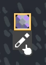you will be prompted to this screen:

the “Add” button
( ) opens a menu to add an instruction:
) opens a menu to add an instruction:
the “Vars” button
( )
opens a menu showing all of your variables
)
opens a menu showing all of your variables
this menu is very useful for debugging

the “edit” button ()opens a menu to export/import codes
when clicking “Copy to Clipboard” it will copy the code of the processor to your clipboard,
unlike a schematic, mlog code are plain readable text, click here for more info
this mlog code can be pasted into a processor again using the "import from clipboard"
How Processor run its code
They Always run Instruction from top to bottom 1 at a time You can only jump and wait, you cannot make it run from bottom to top for example. Here is a visualization:
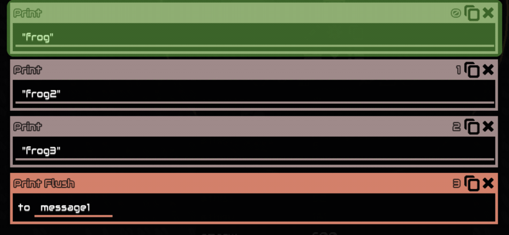with jumps:

When the processor reach the end of its instruction it will go back to 0, repeating the loop indefinitely
Links
You can link a building to the processor by clicking the processor (you can see a circle, this is the processor range) and clicking the building
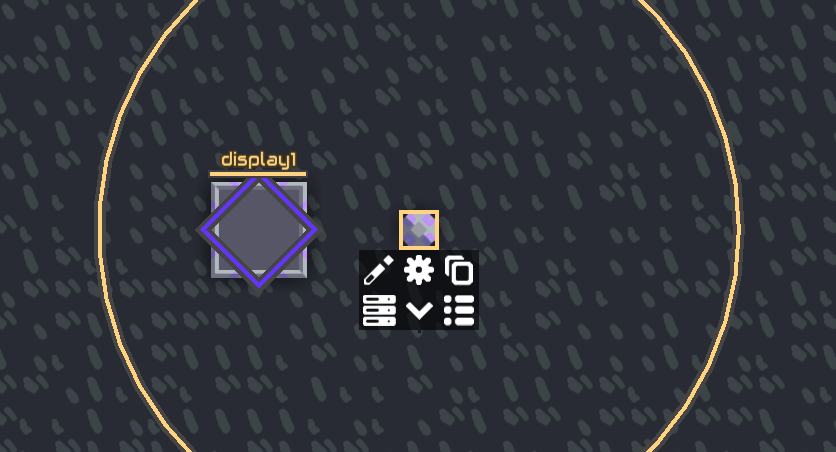`display1` is now a variable that can be used in the processor, it stores a building reference,
is also sometimes called a “building variable”,
building variable cannot be overwritten by any means,
in other words, you cannot use this variable to put in an output of an instruction
however you can copy the its contents to another variable, Like set myBuilding = display1
the variable `myBuilding` is now the same as `display1`, meaning you can use it the same way,
however `myBuilding` is an independent variable (your variable) now, this means it also acts like a normal variable,
for example if the display block that is linked to the processor is destroyed the variable `display1` will be null,
but `myBuilding` will still have the last value it was set to, so you can still sensor things like @dead from it
Variables
Variables are the fundamental of programming, to put it simply, they are just named “containers” to store data to, for example the Set instruction sets a variable:

This will make `x` a variable, this variable can be used for all sort of different things, for example, the Operation instruction
Because `x` is 10 this operation means 10 + 5, and the result of it is written to the `result` variable,
meaning `result` is now 15 Of course it doesn’t have to be `result`, you can write anything for it,
different people write their variable differently, some chooses to write arbitrary words/letters like “peach”
and others simply write “x+5”, whatever you choose is up to you, just keep in mind you have to remember them.
an undefined variable will have null as their default value and this gets coerced to 0.
a processor doesn't have a limit on how many variables it can have, however a processor has a 1000 instruction limit
Incrementing Variable
Increment is the act or process of increasing
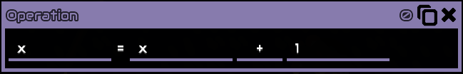Since processor loops, this will increase `x` by 1 every loop, as time goes on x will get bigger and bigger. This is what’s called incrementing a variable
Built in Variables
Built in variables are variables that have their value determined by the game, but can also change. they are preceded by “@”, here are lists of built in variables (if you’re just starting out you don’t have to read all of this you can always come back):
- @counter
- @this
- @unit
- @thisx and @thisy
- @mapw and @maph
- @links
- @ipt
- @time, @tick, @second and @minute
- Because this list is long you can check the Appendix
@counter shows the current line number the processor runs at,
other than giving you crucial
information while debugging you can also use it by writing to it, changing its value, usage example:

This acts like jump always where it will jump to instruction 10 If read it will return the next line instead:

Since this set instruction is at line 10, the `x` variable will be 11. Another usage example is: @counter Array.
@this shows the building reference for that processor, example: anything that uses building reference can be replaced by this, so instead of ‘processor1’ you can write “@this” for this processor
@unit shows the current unit that is stored in the processor as the result of the unit bind instruction. For more information go Controlling Units
Like the name suggest, both shows the coordinates location of the processor respectively
These shows the map width and map height, for example if your map width is 300 @mapw will be equal 300
@links shows the number of links the processor has, example: if you have 3 buildings linked to the processor `display1` , `display2` , `display3` , @links will be 3
ipt stands for instruction per tick, this shows how many instruction a processor run in a single tick 1 second is 60 ticks
Shows the playtime of the current save, this is updated every frame, NOT every time the processor checks for it @time, in millisecond @tick, in tick(1/60th of a second) @second, in second @minutes, in minute
Constants
Constant, they are like variable but you can’t write to them, their value are predetermined, for example “@pi”, like the name suggest it is pi ( , 3.14159….), here are the list of constant (if you’re just starting out you don’t have to read all of this, you can always come back):
- Null
- true and false
- @pi
- @e
- @degToRad
- @radToDeg
null means none, it has no value
true and false are booleans, they are interpreted to 1 and 0
π, 3.14159….
Mathematical constant e (2,71828…)
To convert degrees to radian, multiply the number with this
Opposite of @degToRad
Buffers
Internally there is a Text buffer and a Draw buffer in each processor, when you use print or draw, when the processor runs it, it will store it in the buffer. Example: if you print “frog” the word “frog” will be stored in the text buffer, then to get that word to a message block you have to use Print Flush which transfer the items in the text buffer to the message block


It's the same case with draw.
The draw buffer has a limit of 256 items, meaning you can only queue up 256 draw operations before needing to flush;
otherwise, any additional draws beyond 256 will be discarded.
Additionally, displays have a buffer limit of 1024 operations per display update.
Since the display updates once per tick when visible,
flushing more than 1024 items in a single tick will result in excess items being lost.
However, when a display is off-screen (scrolled out of view), it is not updated at all.
This means if a program continues drawing while the display is off-screen, the buffer can fill up,
causing some operations to be lost even if the rate remained within the 1024-per-tick limit while the display was visible
The text buffer has a 400 character limit, for example “frog” is 4 characters.
Even though the message block has a 220 characters limit you can still print 400 characters to it.
Blocks
- Message
- Switch
- Logic displays and Large
- Memory cell and Memory Bank
Is used with Print and Print Flush, can also be manually written by clicking it and clicking the pencil icon.
has 220 characters limit (including spaces)
will only show its text when hovered
Has 2 states, enabled and disabled / 1 and 0, state can be read using Sensor instruction, and can also be controlled with Control instruction.
Is used with Draw and Draw Flush,
Normal display has a 88 * 88 resolution
Large display has a 176 * 176 resolution
the border (Bezel) is 8 pixels
A cell can store up to 64 values, but only numbers, while Bank can store up to 512 values
How it works:
Let’s use a cell as an example, imagine it is like a numbered storage boxes
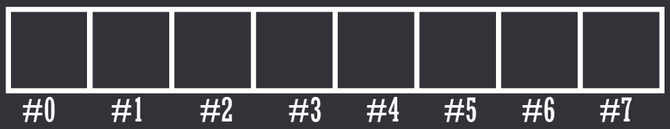the number below are called addresses, since a cell can store up to 64 values that means there are 64 addresses in a cell, from #0 to #63 you can then store a number in this line of boxes by an address, for example if you want to store a number to box number #3 you would write:

this will store the number 1838 to box number #3, you then can read it again using read

this will read whatever inside box number #3 (1838) and put it in a variable
called `result`, therefore `result` is now 1838
the largest integer that can be stored in a single address is related to integer limitations
Instructions
- Read
- Write
- Draw
- Clear
- Color
- col
- Stroke
- Line
- Rect
- Line Rect
- Poly
- Line Poly
- Triangle
- Image
- Draw Flush
- \n
- Printing colors “ [ ] "
- Emoji/icons
- Print Flush
- Get link
- Control
- Enabled
- Shoot
- Shootp
- Config
- Color
- Radar
- Sensor
- Set
- Operation
- +
- -
- *
- /
- //
- %
- ^
- Sqrt
- ==
- Not
- And
- <
- >
- <=
- >=
- log
- log 10
- abs
- floor
- ceil
- or
- b-and
- XOR
- flip
- max
- min
- angle
- angle diff
- len
- noise
- rand
- sin
- cos
- tan
- asin
- acos
- atan
- Lookup
- Pack Color
- Wait
- Stop
- End
- Jump
- ==
- Not
- <
- <=
- >
- >=
- ===
- Always
Read a value from a cell
`result` is your variable name
`cell1` is where to get the value from, a building reference, “bank{number}” for Banks
`0` is the cell’s address. like said above, cells can store up to 64 values, this means there are only 64 addresses, starting at 0, meaning 0 - 63
Example: there is a value at 0 in `cell1` that is `10`, then `result` variable will be 10
Write a value to a cell
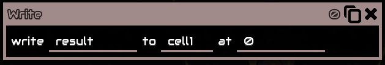
Essentially the same with read but it writes instead
Example: the `result` variable is 10, then it will write `10` to `cell1` at 0
Can also be directly written using a number instead of a variable.
Adds a command to the draw buffer
Sets the entire screen to a specific color

RGB stands for Red,Green,Blue
Value can be from 0 (dimmest) to 255 (brightest)
Example: 255, 255, 255 is White
Sets the color of the next upcoming draw isntruction

RGBA stands for Red,Green,Blue,Alpha
To put it simply Alpha is Opacity, it is how opaque the next draw instruction will be
0 is 0% and 255 is 100% opaque
Value can be from 0 (dimmest) to 255 (brightest)
Same as color, but use hex color code instead of RGB color code Usually used with the Pack Color instruction
Sets the line width for any upcoming draw operations
Draws a line from one coordinates to another coordinates

x,y is the first set of coordinates
x2,y2 is the second sets of coordinates
Draw a rectangle at the specified coordinates with the bottom left of the rectangle as its origin

x,y is the rectangle coordinates
Width and height are the rectangle width and height
Same as rect, but only draws the outline of the rectangle
Draw a polygon with its center as its origin

x,y is the polygon coordinates
sides is the number of sides the polygon will have
radius is the radius of the polygon
rotation will rotate the polygon, in degrees
Same as poly, but only draws the outline of the polygon
Draws a triangle with 3 different sets coordinates as its vertices

x,y is the first sets of coordinates
x2,y2 is the second sets of coordinates
x3,y3 is the second sets of coordinates
Draws an image of something from the game with content name, such as @dagger or @copper with its center as its origin,
if it draws a picture of (oh no) that means whatever you're trying to draw either doesn't exist or not supported, the only work around is drawing it manually,
though the Bleeding Edge version supports more content

x,y is the of coordinates
image is what image it will draw, you put object name here, like @dagger
size is the size of the image
rotation will rotate the image, in degrees
cannot draw modded items!
Flush the queued draw instruction(s) from the draw buffer to the specified displays with its building reference
Prints the specified value to the text buffer, can print both text and variables
however you cannot print text and variable in 1 instruction, you have to use multiple instruction
Writing \n will write the next text to a new line, example:

You can change printed colors with [ ], example

You can either put color names or hexadecimal color code
Example of HEX color code is [#FF0000] for red, you can simply search “hex color picker” on google to choose your own color
Not really Mlog related but worth mentioning,
Mindustry utilizes a specific range within the private use area of Unicode, these can be found on
the source code :
https://github.com/Anuken/Mindustry/blob/9eb8492f4ab8daf15685128229489b7229cc1048/core/assets/icons/icons.properties#L4
which are:
these might just look like boxes to you, but they are actually valid characters when pasted into the game
other than this, Mindustry also supports some public unicode characters, though what of and in what range is unknown
, attempting to paste unsuported characters will just show nothing.
Here what they look like in game:
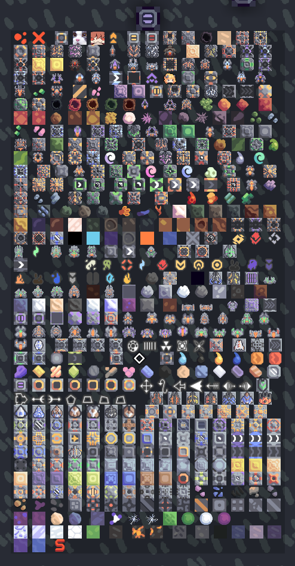
Flush the queued print instruction(s) from the text buffer to the specified message block with its building reference, will erases previous message on the message block
Get link gets the link of the processor linked building
example : you have 2 buildings linked to the processor, `duo1` and `duo2`
getlink `result` #0 will get you `duo1` and
getlink `result` #1 will get you `duo2`
The order is based on the order you link the buildings
The buildings reference is then `result`

Using it with numbers is pretty useless, they are usually used with incrementing variables as its index,
this way you can get multiple buildings without writing every building reference (message1,2,3….)
Controls a building of a building reference or a unit reference
Enabled or disable a building, can be 0 or 1 or true and false

of a block reference
to (state), 1 / true enable, 0 / false disable,
when disabling a processor it pauses code execution until re-enabled again, resuming at the line number where it was disabled
here is a list of blocks behaviour when disabled
Shoot at a coordinate position,
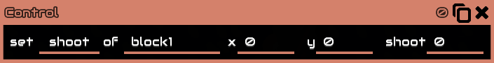
x and y is coordinate location where to aim/shoot at
shoot 0 or 1, true or false, if true tells the turret/unit to shoot, if false stop shooting
Shoot at a unit/building but with velocity prediction

unit, what object to aim/shoot at, it says "unit" but you can put a building reference there too.
shoot 0 or 1, true or false, if true tells the turret/unit to shoot, if false stop shooting
Change the configuration of buildings,
for example :
sorter config, by putting item name to the to arguments, eg @copper, @lead, @surge-alloy
unit factory config, by putting unit name to the to arguments, eg @flare, @dagger,
and of course it only supports units it meant to create, if you put other unit name that it cant create it will just deselect all unit
Change the color of Illuminator block Usually used with pack color
Radar a unit in range of the building’s range
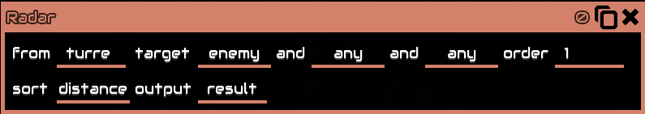
‘from’ is building reference
‘target’ is a filter, target enemy means it will only radar enemy units
‘order’ is sorting order, ascending or descending, can only be 0 or 1
‘sort’ is a metric to sort results by sort distance means it will get unit by distance
Since order is 1, the unit gotten is the closest to that building
Cannot get multiple units at the same time
Order cannot be change to look for metrics in the middle e.g 0.5
Will output the unit reference to `result`
Sensor / get / read data from an object, usually buildings or units with their reference
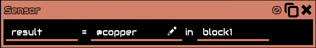
`results` is your named variable
“@copper” is what data to get from the specified object, can be a unit or a building. (click the pencil icon beside it for a list of sensorable data alternatively see Sensors for a list with explanation on each one)
“block1” building reference, it is what object to get the data from, can also be a unit reference
Example:

This will get the amount of copper in ‘vault1’, the number will be stored in the variable `result`, let’s say the vault has 10 coppers, therefore ‘result’ will be 10
Set a variable, either with numbers or with another variable (including unit or block reference)
Perform a single operation on 2 variables, or just numbers directly, example:
Let’s say `a` is 10, therefore this operation means 10 + 5
“result” will then be 15
Addition
Subtraction
Multiplication
Division
Integer division, like division but it will round down the results
Modulo operation, like division but it returns the remainder
Power / exponentiation
Square root
Check if the 2 variables are equal to each other
Returns 1 or 0 / true or false
Logical not, check if the 2 variables are not equal to each other
Returns 1 or 0 / true or false
Logical AND gate
Inputs and output are boolean
Less than, check if the first variable is less than the second variable
Returns 1 or 0 / true or false
Less than equal, check if the first variable is less than equal the second variable
Returns 1 or 0 / true or false
Greater than, check if the first variable is greater than the second variable
Returns 1 or 0 / true or false
Greater than equal, check if the first variable is greater than equal the second variable
Returns 1 or 0 / true or false
Logarithm, return the exponent given the base and the result
Logarithm in base 10
Floor , Round down the specified number
Ceiling , Round up the specified number
Bitwise or
Bitwise and
Bitwise XOR
Bitwise flip
return the largest number out of the 2 number
return the smallest number out of the 2 number
Angle of vector in degrees,usually used like: Angle = ((x1-x2) (y1-y2))
internally the code does:
ang1 = atan2(a,b) * 180/π (convert into degrees)
result = {
if ang1 < 0 = (ang1 + 360),
otherwise = (ang1)
}
where a is the first variable and b is the second
Absolute distance between to angles in degrees, usually used like: angdiff = (ang1)(ang2)
innternally the code does:
a = a % 360
b = b % 360
d1 = (a - b + 360) % 360
d2 = (b - a + 360) % 360
result = min(d1, d2)
where a is the first variable and b is the second
Length of vector, usually used like: len = ((x1-x2) (y1-y2)).
internally the code does:
result = √ (a * a + b * b)
where a is the first variable and b is the second
2d simplex noise
takes 2 value as coordinates and outputs a value from -1 to 1
unlike rand, noise is detemernistic, which means a pair of coordinates will always outputs the same result
for more information to how it internally works check https://github.com/Anuken/Arc/blob/master/arc-core/src/arc/util/noise/Simplex.java
the "raw2d" function/method
generate a random float in range of 0 to the specified value
Sin, in degrees
Cos, in degrees
Tan, in degrees
Asin, in degrees
Acos, in degrees
Atan, in degrees
Look up an item/liquid/unit/block type by ID.
Total counts of each type can be accessed with:
@unitcount / @itemCount / @liquidCount / @blockCount, which is :
56 / 22 / 11 / 254 (as of v146), respectively, they are a constant.
For the inverse operation, sensor @id of the object
Example:
This operation is looking up item with an id of 1, which is lead, therefore `result` will then be @lead (NOT a string), a content name, which can be used for things like sensor :
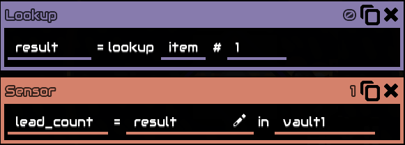
`lead_count` is now a variable containing number of lead in `vault1`
Lookup are usually used with an incrementing variable
Lists of IDs can be found in the Appendix
Packs RGBA color into a single number, is usually used with draw col and control color
Since it's a single number it can be stored to 1 address on cells/banks,
instead of 4 addresses with the usual RGBA, making reading and writing a lot easier too.

RGBA is their respective color, can also be directly written with a
number, value is from 0 (dimmest) to 1 (brightest)
You can unpack a Packed color by dividing it by %00000001, this will
return 32-bit unsigned integer, 8 bits for each value, example : a 255,255,255,255
color when unpacked will return 4294967295, which is the maximum value of 32-bit
unsigned integer, converting it to binary will return 11111111111111111111111111111111
( 8 bit for each value ), by using the bit shift right operation and bitwise
and operation you can extract each color value.
Wait the specified number of seconds, in other words, pausing the processor for that amount of seconds
Completely stops the processor from running, cannot be resumed in any way other than rebuilding or refreshing the code, to pause a processor disable it instead using control enable
End the process, when a processor run this line it will go back to 0 as if it reach the end of the instruction, similar to jump always 0
Jump to a line number on the processor with a condition
if condition are true jump to the specified line, if false does not jump (continuing to instruction below it
Check if the 2 variables are equal to each other
Logical not, check if the 2 variables are not equal to each other
Less than, check if the first variable is less than the second variable
Less than equal, check if the first variable is less than equal the second variable
Greater than, check if the first variable is greater than the second variable
Greater than equal, check if the first variable is greater than equal the second variable
Strict equal, usually used to check for null, example:
0 == null is true, while 0 === null is false
Always jump regardless
Controlling Units
- @unit
- Binding
- Boosting
- Payload
- Unit Bind
- Unit Control
- Move
- Approach
- pathFind
- autoPathFind
- Idle
- Stop
- Boost
- Target
- TargetP
- ItemDrop
- ItemTake
- PayDrop
- PayTake
- PayEnter
- Mine
- Build
- getBlock
- Within
- Unbind
- Flag
- Unit Radar
- Unit Locate
- Building
- Ore
- Spawn
- Damaged
Can only store 1 unit at any given time, stores the unit reference, like building reference, unit reference are different from each other, even the same type
unlike the name say, unit bind instruction itself
does not bind, unit control, unit radar, unit locate are what binds unit.
unit bind just gets a unit's reference and puts it in a variable called @unit
If you hover your mouse on either the unit or the
processor you will see a yellow box showing what unit
the processor is binding or what processor the unit is
binded to, this is called Binded, meaning the unit is
now in full control of the processor, you cannot give
it commands anymore using the RTS Commands, the only
way to get the unit back is either control(posses) the
unit or unbind it which can be done with either destroying
the processor, or altering the processor code, units will
also be automatically un-binded after 10 seconds with no unit
control, unit radar, and unit locate instruction received,
this applies regardless even if the unit is still in the middle of doing something
A unit that is currently controlled(possesed) by the player can also be "bound" but only to retrieve data from it; controlling is not possible.
Some ground units can boost, boosting allows them to fly over anything air units can, albeit slower, these units are: Nova, Pulsar, Quasar, and Vela
Payload is a block/unit that is not physically placed in the world, they are either on a conveyor or picked up by unit,
however if you save its reference prior to making it a payload up you can still sensor data from it like @x and @y, although @dead will be true.
unit’s payload capacity can be found in-game’s info menu
Example: 3x3 means the unit can carry 9 of 1x1 blocks, 2 of 2x2 blocks and, 1 of 3x3 blocks
for units its the same, a mace size is 1.25 x 1.25 meaning it will take 1.5625 block worth of space as payload
Bind 1 unit and put its reference in the @unit variable,
When binding a unit @[type] it will bind in an order
the order of bind is determined by how old it is, the first unit alive will be binded first and the most recent unit is last
When looped (meaning the unit bind instruction is run again) it will bind the next unit in the order, when it reach the end it will go back and bind the first order
Here’s a visualization : the red box indicates that the unit is in the @unit variable

Don’t worry about instruction line 1,2,3,they are there just to make the code not 1 instruction, to more easily visualize it.
Let’s say the first mega reference “mega#1”, when “mega#1” is binded it store the reference in
@unit meaning @unit
is now “mega#1”, and so on with “mega#2 , 3 , 4”
Unit bind can also be used with a variable that stores a unit reference to bind that specific unit directly,
for example the radar instruction can output a unit reference to a variable, you can
use that variable for ubind,
another example after binding a @[type] with ubind you can save
@unit to another variable, then rebind that unit with the variable
Unit control, controls one unit in the @unit variable, a common misconception is that it controls all binded unit, this is wrong, it might seem that way because processor loops, everytime it loops ubind it binds a new unit and controls it, it does this very fast that it looks like its controlling all unit at once.
and a second common misconception is that Unit control wait for completion before running the next unit control, this is also wrong,
Like the visualization you see above, the processor doesn’t care what instruction you put in it, it will just run it regardless, it is not smart, you have to specify it yourself.
Move to unit to the specified coordinates in a straight line
Once the instruction is run it will move to that coordinates even if you immediately remove the instruction, its similar to RTS controls (shift clicking and left click to move unit to the cursor location)

Similar to move but it has a radius, the unit will stop at the radius


Path find to the specified location Usually used with grounded units as Move moves the unit in a straight line and grounded units can get stuck in buildings If the specified location is inside a building or invalid the unit will not move, they will stay in place
Automatically pathfinds to the nearest enemy core or drop point.
This is the same as standard wave enemy pathfinding
Stop moving, but keep building/mining, the default state
Stop moving, mining, and building
Enable boosting, boolean, 1 = boost, 0 = don’t boost. cannot be disabled if boosted unit cannot land (on top of blocks/buildings)
Shoot a coordinate position, boolean, 1 = shoot, 0 = stop shooting

Same as target but shoot a unit reference instead and with velocity prediction
Drops items the unit is currently carrying to the specified location

to a building reference
amount is how many to drop
Unit have to be within (5.625 + [block size] / 2) tiles of the targeted block (from the middle), else it does nothing
Can also drop to “@air” which will discard the item anywhere
to drop everything just put a large number like 999
Unit has an interaction limit of 1,5 seconds, meaning it can only take/drop item every 1,5 seconds
Takes items from the specified building to the unit, unit’s item capacity can be found in-game’s info menu,
from a building reference
amount is how many to take
a unit can only carry 1 type item at a time
Unit have to be within 5.625 + [block size] / 2 tiles of the targeted block (from the middle), else it does nothing,
to take the maximum amount the unit can take just put a large number like 999,
Unit has an interaction limit of 1.5 seconds, meaning it can only take/drop item every 1.5 seconds.
Drop payload at current location.
Pick up a block or a unit at current location and turn it into a payload
if multiple blocks/unit is below the taker location it will take block/unit that is closest to the taker location (taker @x and @y)
for example a unit taker location is exactly at 10,10 , there's 2 unit below it at 9.8,10 and 9.9,10 , when using paytake it will take the 9.9,10 unit
Land/enter on a building directly below the unit, that accept payload, like reconstructor
Mine a coordinate position, if out of range or not mineable will do nothing
Build a block at specified location, if out of range or invalid will do nothing

x,y is build location
block is what block to build
rotation is what orientation the block is built, 0 is right, 1 is up, 2 is left, and 3 is down
Config, configuration of blocks, eg, if `@copper` when building a sorter will set the sorter to `@copper`. Additionally can be a building reference, eg, if `@this` when building a processor will copy `@this` processor’s code to the built processor
Gets a block at a specified location, outputs will be null if out of range

x,y is coordinate location to get the block
type is an output, it will output the type of block to the variable
building is an output, it will output the building reference to the variable
floor is an output, it will output the type of floor to the variable
when getBlock-ing a cell,bank, or a display you can still write/draw to them even if the unit is no longer present,
only the building reference is needed for these blocks, this means you can get them once and then unbind/move the unit
your variable of building will remain until either you overwrite it or the processor is refreshed.
however you can't enable/disable or config getBlock-ed buildings,
Check if unit is within a position with a radius

x,y is coordinate location to check if unit is within that coordinate
radius is the radius of the within
returns boolean
result is the result, 0 / 1, true / false
Example: (the @unit variable is mega shown on the picture)


In this two scenario, the first picture will have the
variable `result` true because the unit is within the circle,
while the second picture is false because it is outside the circle
Immediately unbind unit
Gives the unit a numeric flag, essentially assigning a
number to a unit, this number serves no purpose other
than being read, what you do with the number is up to you
the flag "lives" in the unit, meaning a unit will permanently retains its flag until written again, even if the processor is destroyed
Unit default flag is 0
a unit can only store 1 numeric flag
The largest integer that can be stored in a single flag is related to integer limitations

Unit radar locates other unit around the @unit unit within the unit’s range (information can be found in-game’s info menu)
target is a filter of what category of unit it will radar, enemy means it will radar enemy units
Order is sorting order, ascending or descending, can only be 0 or 1
sort is a metric to sort results by, distance means it will get unit by distance
Since order is 1, the unit gotten is the closest to that @unit’s unit
Will output the unit reference to `result`.
sort distance order 1 = closest, 0 = furthest
sort health, maxHealth, armor, shield order 1 = highest, 0 = lowest
Locates the nearest building/ore/spawn to the unit without needing to be in the unit’s range, but limited to what it can locates
Will locate a building of the selected group, in this case, core,

Enemy is whether to locate enemy building’s or not, true means it will locate enemy’s building, false means it will locate ally building
outX and outY are the building’s output coordinates
Found is an output on whether the building is found(exist in the map) or not, true means it is found, false means it is not found
Building is an output of that building reference

Will locate an ore of the selected type, in this case @copper
May not consistently return the closest tile, but will always return the closest "vein"
Will locate an enemy spawn point, may be a core or a position
Will locate an ally damaged building
Simple Logic examples
if you have a logic schematic/program/invention you want to be documented here feel free to dm me
Universal Switch


line 0 : sensor for @enabled in `switch1`, stores the state in the `switch` variable
line 1 : getlink with `link`, which is an incrementing variable
line 2 : sensor for @type in block for later
line 3 : increment the variable `link`
line 4 : resets the variable `link` when it reached `@links` using the % operator
line 5 : jump if `type` is @switch, this ensures that the switch building does not get controlled
line 6 : control the enabled of `block`, which is the results of getlink, to `switch`
Shuttle Logic

Line 0 : bind a flare
Line 1 : locate an ally core, outputs its coordinates to `cx,cy`, and building reference to `core`
Line 2 - 3 : get the coordinates of the linked vault using sensor
Line 4 : sensoring the @totalItems from @unit to get the amount of items the unit are currently carrying
Line 5 : a conditional jump, jump to (move to core) and take item if the item the unit are currently carrying is 0
Else jump to move to (vault and drop item)
Line 6-7: move to vault and take item from vault
Line 8 : end, to make sure both (move to core) and (move to vault) cannot run in the same time
Line 9-10 : move to core and take @copper from core
The key is to not put 2 or more move that the processor can run “simultaneously”, in other words don’t make the unit move to 2 location or more “simultaneously”
Either move to core or move to vault based on a condition
Thorium Reactor Fail Safe


line 0 : getlink with `i`, which is an incrementing variable, writes the result to `block`
line 1 : sensor for cryofluid in `block`, writes the result to `cryo`
line 2 : compare if `cryo` > (greater than) 15, if it is `fail` will be true, else `fail` will be false
line 3 : control `block` to `fail` which controls the thorium reactors to `fail`, if line 2 is true then `fail` is true, thus enabling the thorium reactor
line 4 : incrementing the variable `i`
line 5 : resets the variable `i` when it reached `@links` using the % operator
@counter Array
This is a bit more advanced than previous examples but it is very useful especially for unit multibind, assuming you already know what an array is you can simulate it using the @counter variable
The variable ‘array’ is now an array, this is a static array, meaning the size of the array is fixed, you can however expand the size of the array to how many you want
Advanced
Writing in text editor
Mlog are essentially plain text, this means you can use any text editor to write mlog, including Notepad
Here are some things that makes it easier to write in plain text:
In these example i will be using Visual Studio Code with “Mindustry Logic” extension
a new VS Code extension for Mlog is available at “Mindustry Logic for VSCode”, made by JeanJPNM
. This extension brings actual support for mlog, like syntax highlighting, intellisense, diagnostic messages, and more, if you’re writing with VSCode I recommend checking this out.
Lables
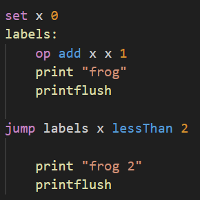Labels are replacement for jumps number, this way you can write freely without needing to worry about jump numbers
Comments
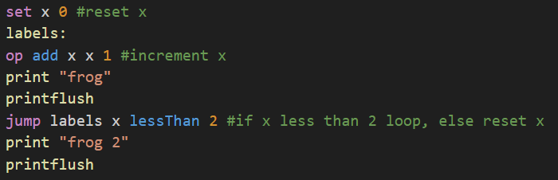Comments will be removed when importing the code to the game
Combining lines
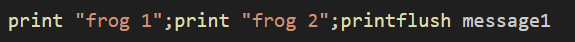You can combine lines with “ ; “
Tabs and newlines
Tabs and newlines will also be removed when importing the code to the game, this is just for better readability
List of mlog instruction in text form
Transpiler
Transpiler is a program that translate programming language to another programming languageList of compiler: (Last updated: 30 January 2023) (Information gathered by Varxalaxiacis)
- Mindcode : A high level language for Mindustry Logic (mlog) and Mindustry Schematics.
- Repo Owner : cardillan
- Last Updated : 2025-01-30T01:04:36Z
- Stars : 93
- Mlog JS : Compile javascript into Mindustry logic code (mlog)
- Repo Owner : mlogjs
- Last Updated : 2025-01-23T21:09:22Z
- Stars : 70
- Pyndustric : A Python compiler for Mindustry's logic processors assembly language
- Repo Owner : Lonami
- Last Updated : 2025-01-07T07:05:14Z
- Stars : 50
- go-mlog : Go to Mindustry (MLOG) compiler, runtime and decompiler (WIP)
- Repo Owner : Vilsol
- Last Updated : 2025-01-26T17:04:51Z
- Stars : 27
- Mlog Bang Lang : Mindustry logic extension meta-programming language, for zero additional overhead!
- Repo Owner : A4-Tacks
- Last Updated : 2025-01-29T07:07:16Z
- Stars : 19
- c2logic : Compiles C code to Mindustry logic.
- Repo Owner : SuperStormer
- Last Updated : 2024-12-03T03:57:31Z
- Stars : 16
- Mlogx : A compiler(technically a transpiler) for Mindustry Logic(mlog.)
- Repo Owner : BalaM314
- Last Updated : 2024-12-08T14:33:51Z
- Stars : 14
- Mlogpp : high level mindustry logic language
- Repo Owner : albi-c
- Last Updated : 2024-01-14T15:50:21Z
- Stars : 7
- Mlogls : A language server for the Mindustry Logic programming language
- Repo Owner : JeanJPNM
- Last Updated : 2025-01-27T22:40:10Z
- Stars : 6
- MlogEvo : Assembly-like language compiles to Mindustry Logic Language
- Repo Owner : yangfl
- Last Updated : 2024-11-10T17:32:34Z
- Stars : 3
- GLSL to Mlog : Transpiles GLSL to mlog (Mindustry Logic)
- Repo Owner : quantumsheep
- Last Updated : 2024-12-17T08:49:50Z
- Stars : 3
- mlogium : high level mindustry logic language
- Repo Owner : albi-c
- Last Updated : 2024-06-24T12:51:41Z
- Stars : 1
- Mlog Compiler : A compiler that compiles a custom programming language into Mindustry logic.
- Repo Owner : BnDLett
- Last Updated : 2025-01-05T09:30:23Z
- Stars : 0
- Mindustry CodeToLogic : Converter from code to mindustry logic
- Repo Owner : Voz-Duh
- Last Updated : 2022-12-16T19:45:49Z
- Stars : 0
Mods
- these mods add little to none new content, their purpose is to enhance logic, not add to them
- yr2 Logic Debugger a common and popular choice, can be found in the game's mod browser
- viewing memory cells content in real time
- viewing all processor's variables in real time
- view currently binded unit with a red line trace to the unit
- and much more
- Logic Debugger By DeltaNedas can be found in the game's mod browser
- Step through logic instructions
- viewing memory cells content in real time
- viewing all processor's variables in real time
- Logic Debugger Extended an extended version of Logic Debugger By Deltanedas extended By zxtej
- Infinite/logics Gives faster processor and world processor, max ipt of which is 6 Million (6.000.000) compared to world processor vanilla which is 500.
- New Console Gives a new console ui superior to the built-in one
- Time Control speed up / slow down the game.
a very comprehensive mod that enchance the ui of logic, gives many excellent extra feature like:
features :
Repo : https://github.com/zxtej/ldb
Gives larger and borderless displays
can be found in the game's mods browser
can be found in the game's mods browser
when used with a logic debugger you can see each instruction execution in slow motion, might give a better understanding how a code works, or debugging.
can be found in the game's mods browser
Antithreading / Subframe
uses the game update order to force multiple processors into one.
Every ingame frame the game updates blocks from left to right and bottom to top, this is not always true if you just recently placed a block, to fix this reload your save.
`wait 1e-3` or just `wait 0.001` will make the processor wait exactly a single frame before continuing running the instructions after it, this also depends on your game FPS
using these you can make multiple processors run instructions at the same time
use cases for this are very minimal, ( I, of course, don’t know every detail about this, the use cases i did use this for was drawing into a single display with multiple processor without it flashing)
World Logic
World processor are processor that controls how the world behave, they have every instruction a normal processor have plus world instruction
They have unlimited range
They can link and control every buildings including enemy’s
they can bind and control every units including enemy’s
Maximum IPT of a world processor is 500, which can be set using Set Rate
How to get World Processor
World processor are editor only object, go to the editor - choose a map -
at the top left there is a hamburger button ,
click on it and go to “Edit In-Game” , world processor
along with world cell and world message will appear in the processor menu,
however this mode is equivalent to pause mode as nothing runs including processors,
go back to the editor open the hamburger button and choose “Playtest” instead, this allows
you to edit and run processor in real time, although not placing new ones
alternatively you can load your custom map as normal through the “Play”
button and use the console to make world processor available, typing :
Blocks.worldProcessor.buildVisibility = BuildVisibility.shown will make world processor available in the menu, and
Vars.state.playtestingMap=Vars.state.map allows you to edit them
(making the map into a playtest mode), we are basically doing the
same thing as the former method but using the console instead, however when you exit out
of the world the game thinks you are in the editor thus putting you in the editor without saving any changes,
auto save does work though, so you might want to lower the auto save interval, or you can disable the playtest mode using :
Vars.state.playtestingMap=null before exiting the world
there might be better ways of gaining access to world processor, like using mods, if you know any other easier method let me know and i will edit this section
- Get block
- Set Block
- Spawn Unit
- Apply Status
- Spawn Wave
- Set Rule
- Flush Message
- Cut scene
- Effect
- Explosion 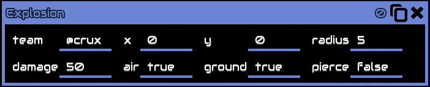
- Set Rate
- Fetch
- Sync 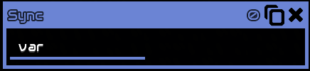
- Set Flag
- Get Flag
- Set Prop

“result” the output
`get` what to get, can be:
“floor” get the floor name of the specified coordinate
“ore” get the ore name of the specified coordinate
“block” get the block name of the specified coordinate
“building” get the building reference of the specified coordinate
`at` x and y coordinate respectively

`set` what type to set, can be :
“floor” set the floor to the specified name and Coordinate
“ore” set ore to the specified name and coordinate
“block” set block to the specified name and coordinate
name can be found on Environment
`at` x and y coordinate respectively
`team` what them to set the block to, can be team name or a number 0 - 255

“result”, the output, unit reference
`spawn` what unit to spawn
`at` x and y coordinate respectively
`team` what them to set the block to, can be team name or a number 0 - 255
`rot` rotation (facing what direction) of the spawned unit, in degrees, for reference : 360/0 is right, 90 is up

`apply` or `clear`, apply or clear
`wet` what status to apply to the unit
`to` unit, unit reference
`for` duration of the status


currentWaveTime
change the current wave timer, in seconds
waveTimer
waves
wave
set wave number
waveSpacing
change the timer for the next wave, in seconds
waveSending
attackMode
enemyCoreBuildRadius
set how large the radius of the no build zone around the enemy core
dropZoneRadius
set how large the annihilation radius around the enemy spawn point
unitCap
set the cap of unit that can be constructed
mapArea
set the size of the playable field in the map/sector
starts at the bottom left
`x` and `y` is the offset from 0,0
`width` and `height` is the size of the map, calculated from the offset
lightning
boolean, whether to enable lightning or not, if disabled all section of the map (other solid walls) will be fully bright
ambientLight
set the ‘dark’ part of light colors, in other words change colors of shadows
solarMultiplier
set the multiplier solar panels produce power
unitBuildSpeed
set the build speed of units
unitHealth
set the multiplier of unit health, does not actually change unit max health, increase
resistance instead, actual damage received = (damage received / unitHealth)
as for ‘damage received’ check damage calculation
unitCost
set multiplier of unit construction cost
unitDamage
set the multiplier of unit damage
blockHealth
set the multiplier of block health
blockDamage
set the multiplier of block damage (turrets, explosion, etc)
rtsMinWeight
rtsMinSquad

display a message on player’s screen from the text buffer, will wait until the previous message finishes
`announce` center of the screen
`notify` top of the screen

`toast`

`mission`

manipulate the camera, players cannot move/interact in this mode
does not have duration cutscene will stays until `cutscene stop` is used
`pan` moves the camera to the specified coordinates, with specified speed
`zoom` zooms the camera, value is from 0 to 1, although can be more it is limited by the game, this limit is the same as your manual zoom limit, when used not with `pan` will zoom to 0,0 instead
`stop` stops previous cutscene
display a particle effect on the world, you can click the `warn` to view every available effect
create an explosion
`team` what team the explosion belong to, explosion cannot harm ally blocks
`x` `y` where to create the explosion
`radius` size of explosion, block outside this radius does not take damage
`damage` the damage of the explosion
`air` whether to damage air or nor, true means it will damage air (air units, boosted units, etc)
`ground` whether to damage ground or nor, true means it will damage ground (ground unit, blocks, etc)
`pierce` whether to pierce buildings or not, if false, it will need a line of sight from the explosion to the block, if something is in the way that block will not be damaged

Set the speed of the processor, in instruction per tick, 1 second = 60 ticks
get unit, player, core, building, and outputs their reference to “result”, by index
`team` what team to fetch the object
`#` index, starts at 0, 0 being the first object
unitCount, playerCount, coreCount, buildCount, gets the total count of currently alive/available object in the world
when an object dies the last object index will replace the object index that dies
for example: you have 10 conveyors indexed from 1-10, conveyor #5 is deconstructed, conveyor
#10 will the become #5, then a new placed conveyor will become #10
sync a variable across all devices, used mainly in multiplayer, to avoid desyncing

set a global flag / global variable, flag content can only be 0 or 1, true or false
flag name is enclosed by ` " `
this flag can be read anywhere in the map using the get flag instruction
read the flag/variable created by set flag
reads the content of the flag
writes the result the the result variable

sets the properties of a unit or building
`of` unit/building Reference
`to` value
Bleeding Edge
Bleeding edge is the newest test version of mindustry, like Early Access or Beta Build
BE version can be found and downloaded on
https://github.com/Anuken/MindustryBuilds
BE feature are subject to change, therefore i cannot make sure these information are up to date
the read and write instruction now supports writing and reading directly to another processor.
by putting "string" on the at field and the processor reference on the
to field, you can directly change the value of that variable in that processor
print a character and put it in the text buffer like print does, however
takes integer as an input instead of string.
uses the ASCII table https://wikipedia.org/wiki/ASCII
Draw image now supports more contents, like floors (@salt, @ice) and more
Draw text from the print buffer. only ASCII characters allowed. clears the print buffer. still needs to be draw flushed
Translate / offset the display coordinates, this instruction is cumulative, meaning it translate it by the specified number every flush.
example: you draw something at 20, 20, running and flushing translate 10,10 will offset the display coordinates by 10, so your (draw at 20,20) is now appeared as it was drawn on 30,30.
like said above it is cumulative, if you run and flush translate 10, 10 again it will offset it again by 10, so your (draw at 20,20) is now appeared as it was drawn on 40,40.
also is stored in the display like any other draw instruction, meaning if other processors draw to that display it will also be translated.
to reset it use draw reset.
scale the display coordinates / zooms it, this is also cumulative and stored in the display like translate.
example: you draw a rectangle at 20, 20 with width and height of 20, 20, if you draw scale 2, 2 the rectangle will appear 2 times bigger / appeared as it was drawn with width and height of 40, 40.
if you run and flush scale 2, 2 again it will scale it again by 2 times again.
running scale 1,2 will work as you expected, scaling the y while not scaling the x.
self explanatory, rotate the display coordinates by a degree, also cumulative and stored in the display like translate and scale.
resets all previous translate,scale,and rotate / will make your display coordinates normal / as it was like a new one.
allows you to print a variable or something else inside a string, if you know python it's similar to
f”string text {variable}”, where `variable` can be anything, int, float, or another string.
the pattern is {0-9}
example:
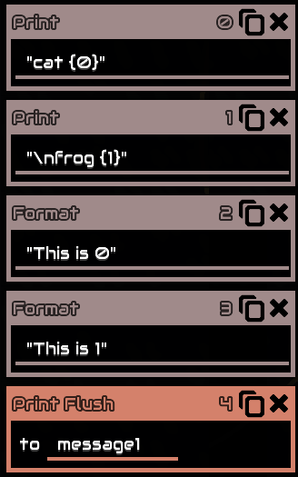

the first format will take {0} and the second format will take {1}

plays a sound from the game’s sfx, include all of the game’s .ogg file, can be found in sounds folder.
volume controls the volume of the played sound.
pitch change the pitch of the played sound, .
the formula is, pitch = 2 ^ ([semitone change] / 12 ).
for example @sfx-press tone is c4 to make it c5 meaning increase it by 12 semitone :
2 ^ (12 / 12) = 2
or c6 : 2 ^ (24 / 12) = 4
or c3 : 2 ^ (-12 / 12) = 0.5
pan pans the sound to the left or right
limit, if true prevents sound from being played if the sound has already played in the same frame, this prevents ear destroying sounds
sense the current weather is the specified weather type, returns boolean
set the current state of the weather to the specified type
Makes a Marker
a marker is an entity in the map that shows content to the user, for example when you select a unit (shift + drag click) a diamond
shaped box appear around that unit, that is a marker, or when you tell a unit to move a line appears, that is also considered a marker,
the floating text in the beginning tutorial is also a marker.
id is numeric identity of the Marker, id can be from 0 to 19999
meaning a world/map can only have 20.000 markers
game created markers like the examples above doesn't intervere with player made markers
replace determines whether this marker will replace exsisting previous markers that has the same id
currently there is a bug with the replace argument where it replaces other markers than the specified id
it is recommended to just keep it false
Texture, makes a marker for a Texture.
initially invisible until texture is defined, using setmarker texture.
texture can be anything that is available in the game.
Quad, are quadrilateral / a 4 sided polygon.
a quad has 4 vertices and 4 sides.
each vertices position can be set using setmarker posi.
texture is initially just pure white, can be defined with setmarker texture,
then needs to be further defined with setmarker uvi to set the texture location within the quad.


Sets a property of a marker with the specified id.
texture, sets the texure of a marker.
the `printFlush` argument are boolean,
when true it uses the text in the text buffer as the name,
otherwise uses the `name` argument.
name can game content name, like @router, or @surge-alloy, if doesn't work use file name instead.
can also be file name, like "item-copper", when using a file name remember to put them in quotes,
file names can be found on https://github.com/Anuken/Mindustry/tree/master/core/assets-raw/sprites
posi, sets the vertices location of a quad, location are world x,y location
with index from 0-3
each index repesents each vertices
uvi, sets each vertices of the texture relative to the quad (UV Mapping with index)
with index from 0-3
each index repesents each vertices, example:
#0 (0,0)
#1 (1,0)
#2 (1,1)
#3 (0,1)
will sets each texture vertices exactly where the quad vertices are, this means texture will stretch/reform to the quad shapes
colori, similar to uvi, if indexes are set to different colors; color will gradient from one to the other
with index from 0-3
each index repesents each vertices, example:
#0 (0,0)
#1 (1,0)
#2 (1,1)
#3 (0,1)
will set
color, change the color of the marker.
color only tints the color of the marker,
meaning a marker that already has a color, like setting the color of a texture to white doesn't effect them, it will appear as its original texture color,
since quad doesn't have a color quad will take the full color the specified color.
an object camera width/height, usually the players possesed object, eg turrets/units
the width/height numbers are in blocks
example:
`sensor width @unit @cameraWidth`, where @unit is the player
a maxed zoomed out screen on a 1080x1920 screen width is 40, which means the viewable width is 40 blocks
if the object is not a player/doesn't have a camera returns 0
an object x/y camera location
the x/y numbers are in the map coordinate system
example:
`sensor x @unit @cameraX`, where `@unit` is the player
while moving the camera returns the camera position in the map coordinate location
different from sensoring `@x` since you can move the camera independently of the unit
an object solidness
example:
`sensor s conveyor1 @solid`
returns `s` as 0
while a wall for example returns 1
an object velocity, in blocks/second
example:
`sensor vx @unit @velocityX`
returns `vx` as a number of the @unit velocity in blocks/second
can also be think of as a vector,
by using `op len` on the @unit's @velocityX and @velocityY you can get the unit current speed
this variable also avaiable in `setprop`
Extras
These are niche question that very small number of people might have
Mindustry coordinate system
unlike traditional Cartesian Coordinate System where the center point of a coordinate is on the edge of a block Mindustry chooses the middle of a block as its center point instead

the game still uses Cartesian but just offset by 0.5
the game also by default set 0,0 to the very bottom left of the world, this means all campaign world and most custom worlds (since you can set the coordinate offset in the editor) playfield are always positive
The word configure turns to config
in v6 the config property was renamed to configure. To ensure backwards compatibility with old code
the game automatically changes the word configure to config
therefore it is not recommended to use the word configure anywhere in your code
this applies both when writing in game and importing from text
You cannot spawn Scathe missile
To spawn a Scathe missile you have to spawn a unit capable of carrying a payload, set that unit payload to scathe missile using `setprop` and `@scathe-missle`, make the unit drop the payload and then kill the unit
you can also setprop properties of the scathe missile.
by using fetch with @scathe-missile as the `unit` argument you can get the scathe missile reference
you can put this reference to the setprop instruction to set the properties of the missile.
Modded items and draw image
the game doesn’t generate logic icons for modded items, this means you cannot draw it using draw image
AI chatbot doesn’t understand Mlog
AI chatbot like ChatGPT / Copilot / Aria, can’t do and doesn’t understand Mlog, to my knowledge there is no AI currently that can assist you with Mlog
Getting unit cap
There currently no way of getting the unit cap consistently, there are workarounds however, assuming the default cap isn’t changed you can count how many cores there are in the map and what type it is, if you know both of those you can get the unit cap by summing up all of those core(s) ‘Max Active Unit’ Shard has a unit cap of 8, foundation is 16, and nucleus is 24, info of which can be found in the game’s info menu
v6 unit controls with logic
you cannot 100% replicate v6 unit controlling with logic, formation and shooting is possible, but support units cannot help you build like they used to in v6, although not perfect the RTS controls is the best we currently have
Damage calculation
every unit has an armor value, in most cases damage is just simply subtracted by this armor value, formula is
damage received = max (damage * 0.1 , damage - armor)
example :
unit = corvus, armor = 9
enemy turret = lancer, damage = 140
damage received = max ( 140 * 0.1 , 140 - 9)
damage received = max ( 14 , 131)
damage received = 131
Math
Math is useful in every language. Since there are so many topics, I will only explain the ones commonly used in Mindustry.- Trigonometry
Sine
Calculates how much a point moves along the Y-axis based on an angle.
for example: Imagine a clock hand (arrow) with a length of 1, the arrow is currently point to 3 o'clock, let's say that is 0°,
now rotate the arrow counterclock wise by 45°, the arrow is now pointing between 1 and 2 (1:30),
now place a point at the tip of the arrow,
in just the Y-axis what is the length from the center of the clock to that point?
this is what sin(45°) gets, which is 0.707106...,
Cosine does the same but in the X-axis instead
using this you can plot a point based on another point
for example you want to plot a point in front of a unit, sensor its @rotation, sine and cosine it,
the new point formula is Xnew = Xcurrent + Cos(@rotation) and Ynew = Ycurrent + Sin(@rotation)
where Xcurrent and Ycurrent is the current location of the unit, which you can get by sensoring it for @x and @y
this will plot a point with a length exactly 1 from the unit, to increase the length just multiply the output of the sine and cosine:
5*Cos(@rotation) and 5*Sin(@rotation), same as before add this to the current unit position, this will make a point in front of the unit with a length of exactly 5 - LERP (Linear Interpolation)
in Mindustry it is mainly used for getting a point in between 2 known points, the general formula are:
Xnew = (1 - t) * X1 + t * X2
Ynew = (1 - t) * Y1 + t * Y2
where X1 and Y1 is the first known point and
X2 and Y2 is the second known point
t is ratio from 1 point to the other, for example if you wanna get a point in the middle of 2 known point put t as 0.5
or if you want 75% of the way, put t as 0.75 - Vectors
Vector is defined by a : Direction, and Magnitude
Direction is where the vector is pointing at
Magnitude is how long the vector is
for example : a vector with direction of (1,0), since the X component of the direction is 1 and Y is 0 this means the vector is pointing straight to the right with a magnitude of 1
how do we know this?
assume the vector base is (0,0) then draw a point with the direction as its location (1,0), now you have 2 points, from the vector base draw a line/arrow to the second point, now you know where the vector is pointing
to get the magnitude we have to do some calculation:
Magnitude = √(Dx)2 + (Dy)2
or you can use mindustry built in instruction the op len by putting Dx and Dy
for 2 points in space how do we get a vector from one to another?
if you remember vector is just a point pointing to another point in space
point A : (10,10) point B : (15,20), let's say you want to get a vector from A to B
you only need to get the displacement from A to B, this can be easily calculated by just subtracting each component from each point
C = (Bx - Ax), (By - Ay)
C = (5,10), thats it, C is now a vector
if you add C to A the location of A will now become B, add it again it will be at another point of (20,30)
what is the use of vector?, imagine you have a ball, you throw it directly upwards with the speed of let's say 10 unit/second, that ball now have a vector of (0,10), vector can be used to determined an object velocity
in programming, you have a point that you want to move, unlike reality you cannot move an object with infinite precision , you can only step through (usually per tick), you want to move it 12 units to the right per second, its simple, just add (12,0) to your point every second, you might say it looks like its jumping not moving, well we really can't get an object to move in the digital world like in reality only the illusion of moving, so you want to add the vector to your point in quicker succession with smaller magnitude, let's say 60 times per seconds you want to add (0.2,0) to your point every 1/60th of a second to get it to move 12 units in 1 second
Linking a processor to itself
normally control enabled @this 0, doesn't work, but if you link the processor to itself it does
to link a processor to itself you either need a modified schematic file or using the console:
Vars.world.tile(x, y).build.links.add(new LogicBlock.LogicLink(x, y, "processor1", true))
replace the x and y to the coordinates of the processor, and paste it to the console, this will make the processor link it self
now control enabled @this 0 will work,
there might be some other uses for it, but i haven't found any, if you do feel free to contact me so i can update this
Self Promotion
My Micro Processor only Bad Apple!!!
Bad Apple!! in Mindustry!
Raycasting and DDA Raycasting
Mindustry Raycasting DDA Raycasting
DDA Raycasting

Perspective Projection
Perspective Projection | Mindustry

Power Monitor with Numbers

Appendix
Mlog Invention
is in a seperate page Yrueii.github.io/MlogDocs/MlogInvention
Built in variables
Information of each might be added in the future
Global
@waveNumber
number of wave currently
@waveTime
current countdown time for next wave
@derelict
derelict team
@sharded
sharded team
@crux
crux team
@malis
malis team
@green
green team
@blue
blue team
@solid
alias for stone-wall
@block
@manifold
@assembly-drone
@turret-unit-build-tower
@blockCount
count of total different type of block in the game
@unitCount
count of total different type of unit in the game
@itemCount
count of total different type of item in the game
@liquidCount
count of total different type of liquid in the game
Environment
@air
@spawn
@cliff
@build1
@build2
@build3
@build4
@build5
@build6
@build7
@build8
@build9
@build10
@build11
@build12
@build13
@build14
@build15
@build16
@deep-water
@shallow-water
@tainted-water
@deep-tainted-water
@darksand-tainted-water
@sand-water
@darksand-water
@tar
@pooled-cryofluid
@molten-slag
@space
@empty
@stone
@crater-stone
@char
@basalt
@hotrock
@magmarock
@sand-floor
@darksand
@dirt
@mud
@dacite
@rhyolite
@rhyolite-crater
@rough-rhyolite
@regolith
@yellow-stone
@carbon-stone
@ferric-stone
@ferric-craters
@beryllic-stone
@crystalline-stone
@crystal-floor
@yellow-stone-plates
@red-stone
@dense-red-stone
@red-ice
@arkycite-floor
@arkyic-stone
@rhyolite-vent
@carbon-vent
@arkyic-vent
@yellow-stone-vent
@red-stone-vent
@crystalline-vent
@redmat
@bluemat
@grass
@salt
@snow
@ice
@ice-snow
@shale
@moss
@core-zone
@spore-moss
@stone-wall
@spore-wall
@dirt-wall
@dacite-wall
@ice-wall
@snow-wall
@dune-wall
@regolith-wall
@yellow-stone-wall
@rhyolite-wall
@carbon-wall
@ferric-stone-wall
@beryllic-stone-wall
@arkyic-wall
@crystalline-stone-wall
@red-ice-wall
@red-stone-wall
@red-diamond-wall
@sand-wall
@salt-wall
@shrubs
@shale-wall
@spore-pine
@snow-pine
@pine
@white-tree-dead
@white-tree
@spore-cluster
@redweed
@pur-bush
@yellowcoral
@boulder
@snow-boulder
@shale-boulder
@sand-boulder
@dacite-boulder
@basalt-boulder
@carbon-boulder
@ferric-boulder
@beryllic-boulder
@yellow-stone-boulder
@arkyic-boulder
@crystal-cluster
@vibrant-crystal-cluster
@crystal-blocks
@crystal-orbs
@crystalline-boulder
@red-ice-boulder
@rhyolite-boulder
@red-stone-boulder
@metal-floor
@metal-floor-damaged
@metal-floor-2
@metal-floor-3
@metal-floor-4
@metal-floor-5
@dark-panel-1
@dark-panel-2
@dark-panel-3
@dark-panel-4
@dark-panel-5
@dark-panel-6
@dark-metal
@pebbles
@tendrils
@ore-copper
@ore-lead
@ore-scrap
@ore-coal
@ore-titanium
@ore-thorium
@ore-beryllium
@ore-tungsten
@ore-crystal-thorium
@ore-wall-thorium
@ore-wall-beryllium
@graphitic-wall
@ore-wall-tungsten
Sensors
@totalItems
total items the object is currently holding; returns integer
@firstItem
the first item the object is currently holding
returns item names, eg, @copper, @lead, @surge-alloy
@totalLiquids
total liquid units the object is currently holding; returns number
@totalPower
total power stored in a singular battery, returns number, can also check if a block is powered or not, returns boolean
@itemCapacity
the maximum item capacity an object can hold, for vault it is 1000 even though it can store each item for 1000; returns number, information can also be found on ingame’s info menu
@liquidCapacity
the maximum liquid units capacity an object can hold; returns number, information can also be found on ingame’s info menu
@powerCapacity
the maximum power unit a battery can hold; returns number, information can also be found on ingame’s info menu
@powerNetStored
the power currently stored in the net (all connected batteries); returns number
@powerNetCapacity
the maximum power unit a net of battery can hold; returns number
@powerNetIn
the gross power of net generators (anything that generate power); returns number
@powerNetOut
the load power of net (anything that uses power); returns number
@ammo
the number of shot a turret can shoot, doesn’t necessarily mean total items in turret
@ammoCapacity
the maximum amount of items (ammo) a turret can hold; returns number
@health
the current health of object, returns number
@maxHealth
the maximum health of object, returns number
@heat
heat of object, like heat in thorium reactor / force projector, returns number
@efficiency
efficiency of a block depending its resources, eg, a block needs 100 power but there's only 50, efficiency will
return 0.5, or 15 liquid but there's only 7, will return 0.46. returns number
not affected by floor type, eg thermal generator on magma rock, or water extractor on ice (still return 1)
@progress
progress of an object, eg, launch pad when on their cooldown, foreshadow when on their cooldown; returns number, 0 - 1
@timescale
multipliers of boosted object (overdrived with overdrive projector or overdrive dome), returns number, 1 is normal value, 1.5 is when overdrive with overdrive projector, 2.5 is dome
@rotation
rotation of object, returns number in degrees,0 - 360, 360/0 is right, 90 is up, 180 is left, 270 is down
for blocks its: 0 is right, 1 is up, 2 is left, and 3 is down
@x
the x coordinate location of the object; returns number
@y
the y coordinate location of the object; returns number
@shootX
the x coordinate value of what that object is targeting, returns number, if used on a player will return their cursor position
@shootY
the y coordinate value of what that object is targeting, returns number, if used on a player will return their cursor position
@size
the size of object; returns number, eg, foreshadow is 4 because it is 4x4, information can also be found on ingame’s info menu
@dead
whether the object is dead or not, returns booelan, 1 is dead, 0 is not dead
@range
range of object; returns number, information can also be found on ingame’s info menu
@shooting
whether the object is shooting or not, returns boolean, 1 is shooting, 0 is not shooting
@boosting
whether the object is boosting or not; returns boolean, 1 is boosting, 0 is not boosting
@mineX
if unit is mining returns the x coordinate value of that unit mining location, else returns -1
@mineY
if unit is mining returns the y coordinate value of that unit mining location, else returns -1
@mining
whether the unit is mining or not; returns boolean, 1 is mining, 0 is not mining
@speed
the object maximum speed, in tiles/second; returns number, information can also be found on ingame’s info menu, there is currently no variable for current speed
@team
the object team; returns integers, 1 is sharded, 2 is crux, …. there are a total of 256 available team in mindustry
0 = @derelict
1 = @sharded
2 = @crux
3 = @malis
4 = @green
5 = @blue
6 - 255 = unnamed
@type
returns the object’s content name (not reference), eg, for router returns `@router` , not a string
@flag
the object’s flags; returns number, unit can be flagged with `ucontrol flag`
@controlled
check if unit is controlled, returns :
0 , if unit is not controlled by anything
@ctrlProcessor or 1, if unit is controlled by processor
@ctrlPlayer or 2, if unit is controlled by a player
@ctrlCommad or 3, if unit is controlled by a player command
@controller
returns the controller reference, if processor will returns that processor building reference, else returns the unit reference itself
@name
name of player, returns string
@payloadCount
number of payload the unit is currently carrying, returns integer
@payloadType
name of payload, will return only the last picked up payload, returns name
@id
returns the content name ID, returns integer
(a reference does not have an @id)
@enabled
whether the object is enabled or not, returns boolean; 1 is enabled, 0 is disabled
@config
configuration of object, eg, sorter item names
@color
color of illuminator, returns packed color
Blocks and Items
Blocks
@graphite-press
@multi-press
@silicon-smelter
@silicon-crucible
@kiln
@plastanium-compressor
@phase-weaver
@surge-smelter
@cryofluid-mixer
@pyratite-mixer
@blast-mixer
@melter
@separator
@disassembler
@spore-press
@pulverizer
@coal-centrifuge
@incinerator
@silicon-arc-furnace
@electrolyzer
@atmospheric-concentrator
@oxidation-chamber
@electric-heater
@slag-heater
@phase-heater
@heat-redirector
@heat-router
@slag-incinerator
@carbide-crucible
@slag-centrifuge
@surge-crucible
@cyanogen-synthesizer
@phase-synthesizer
@heat-reactor
@copper-wall
@copper-wall-large
@titanium-wall
@titanium-wall-large
@plastanium-wall
@plastanium-wall-large
@thorium-wall
@thorium-wall-large
@phase-wall
@phase-wall-large
@surge-wall
@surge-wall-large
@door
@door-large
@scrap-wall
@scrap-wall-large
@scrap-wall-huge
@scrap-wall-gigantic
@thruster
@beryllium-wall
@beryllium-wall-large
@tungsten-wall
@tungsten-wall-large
@blast-door
@reinforced-surge-wall
@reinforced-surge-wall-large
@carbide-wall
@carbide-wall-large
@shielded-wall
@mender
@mend-projector
@overdrive-projector
@overdrive-dome
@force-projector
@shock-mine
@radar
@build-tower
@regen-projector
@shockwave-tower
@shield-projector
@large-shield-projector
@conveyor
@titanium-conveyor
@plastanium-conveyor
@armored-conveyor
@junction
@bridge-conveyor
@phase-conveyor
@sorter
@inverted-sorter
@router
@distributor
@overflow-gate
@underflow-gate
@mass-driver
@duct
@armored-duct
@duct-router
@overflow-duct
@underflow-duct
@duct-bridge
@duct-unloader
@surge-conveyor
@surge-router
@unit-cargo-loader
@unit-cargo-unload-point
@mechanical-pump
@rotary-pump
@impulse-pump
@conduit
@pulse-conduit
@plated-conduit
@liquid-router
@liquid-container
@liquid-tank
@liquid-junction
@bridge-conduit
@phase-conduit
@reinforced-pump
@reinforced-conduit
@reinforced-liquid-junction
@reinforced-bridge-conduit
@reinforced-liquid-router
@reinforced-liquid-container
@reinforced-liquid-tank
@power-node
@power-node-large
@surge-tower
@diode
@battery
@battery-large
@combustion-generator
@thermal-generator
@steam-generator
@differential-generator
@rtg-generator
@solar-panel
@solar-panel-large
@thorium-reactor
@impact-reactor
@beam-node
@beam-tower
@beam-link
@turbine-condenser
@chemical-combustion-chamber
@pyrolysis-generator
@flux-reactor
@neoplasia-reactor
@mechanical-drill
@pneumatic-drill
@laser-drill
@blast-drill
@water-extractor
@cultivator
@oil-extractor
@vent-condenser
@cliff-crusher
@plasma-bore
@large-plasma-bore
@impact-drill
@eruption-drill
@core-shard
@core-foundation
@core-nucleus
@core-bastion
@core-citadel
@core-acropolis
@container
@vault
@unloader
@reinforced-container
@reinforced-vault
@duo
@scatter
@scorch
@hail
@wave
@lancer
@arc
@parallax
@swarmer
@salvo
@segment
@tsunami
@fuse
@ripple
@cyclone
@foreshadow
@spectre
@meltdown
@breach
@diffuse
@sublimate
@titan
@disperse
@afflict
@lustre
@scathe
@smite
@malign
@ground-factory
@air-factory
@naval-factory
@additive-reconstructor
@multiplicative-reconstructor
@exponential-reconstructor
@tetrative-reconstructor
@repair-point
@repair-turret
@tank-fabricator
@ship-fabricator
@mech-fabricator
@tank-refabricator
@mech-refabricator
@ship-refabricator
@prime-refabricator
@tank-assembler
@ship-assembler
@mech-assembler
@basic-assembler-module
@unit-repair-tower
@payload-conveyor
@payload-router
@reinforced-payload-conveyor
@reinforced-payload-router
@payload-mass-driver
@large-payload-mass-driver
@small-deconstructor
@deconstructor
@constructor
@large-constructor
@payload-loader
@payload-unloader
@power-source
@power-void
@item-source
@item-void
@liquid-source
@liquid-void
@payload-source
@payload-void
@heat-source
@illuminator
@legacy-mech-pad
@legacy-unit-factory
@legacy-unit-factory-air
@legacy-unit-factory-ground
@command-center
@launch-pad
@interplanetary-accelerator
@message
@switch
@micro-processor
@logic-processor
@hyper-processor
@memory-cell
@memory-bank
@logic-display
@large-logic-display
@canvas
@reinforced-message
@world-processor
@world-cell
@world-message
Items
@copper
@lead
@metaglass
@graphite
@sand
@coal
@titanium
@thorium
@scrap
@silicon
@plastanium
@phase-fabric
@surge-alloy
@spore-pod
@blast-compound
@pyratite
@beryllium
@tungsten
@oxide
@carbide
@fissile-matter
@dormant-cyst
@water
@slag
@oil
@cryofluid
@neoplasm
@arkycite
@gallium
@ozone
@hydrogen
@nitrogen
@cyanogen
Units
@dagger
@mace
@fortress
@scepter
@reign
@nova
@pulsar
@quasar
@vela
@corvus
@crawler
@atrax
@spiroct
@arkyid
@toxopid
@flare
@horizon
@zenith
@antumbra
@eclipse
@mono
@poly
@mega
@quad
@oct
@risso
@minke
@bryde
@sei
@omura
@retusa
@oxynoe
@cyerce
@aegires
@navanax
@alpha
@beta
@gamma
@stell
@locus
@precept
@vanquish
@conquer
@merui
@cleroi
@anthicus
@anthicus-missile
@tecta
@collaris
@elude
@avert
@obviate
@quell
@quell-missile
@disrupt
@disrupt-missile
@renale
@latum
@evoke
@incite
@emanate
@scathe-missile
Text form instruction
or you can just write the instruction in game and “copy to clipboard”
Normal processor
read result cell1 0
write result cell1 0
draw clear r g b
color r b g a
col n
stroke n
line x y x2 y2
rect x y width height
lineRect x y width height
poly x y sides radius rotation
linePoly x y sides radius rotation
triangle x y x2 y2 x3 y3
image x y @copper size rotation
print "frog"
drawflush display1
printflush message1
getlink result index
control enabled block1 enable
shoot block1 x y shoot
shootp block1 unit shoot
config block1 to
color block1 to
radar filter filter filter distance turret1 order result
any health
enemy shield
ally armor
player maxHealth
attacker
flying
boss
ground
sensor result block1 @copper
set result 0
op add result a b
sub
mul
div
idiv
mod
pow
equal
notEqual
land
lessThan
lessThanEq
greaterThan
greaterThanEq
strictEqual
shl
shr
or
and
xor
not
max
min
angle
angleDiff
len
noise
abs
log
log10
floor
ceil
sqrt
rand
sin
cos
tan
asin
acos
atan
lookup block result index
unit
item
liquid
packcolor result r g b a
wait 0.5
stop
end
jump -1 equal v1 v2
notEqual
lessThan
lessThanEq
greaterThan
greaterThanEq
strictEqual
always
ubind @poly
ucontrol idle
stop
move x y
approach x y radius
pathfind x y
autoPathfind
boost enable
target x y shoot
targetp unit shoot
itemDrop to amount
itemTake from amount
payDrop
payTake takeUnits
payEnter
mine x y
flag value
build x y block rotation config
getBlock x y type building floor
within x y radius result
unbind
uradar any any any distance 0 1 result
enemy distance
ally health
player shield
attacker armor
flying maxHealth
boss
ground
ulocate building core enemy @copper outx outy found building
core
storage
generator
turret
factory
repair
battery
reactor
ulocate ore core true @copper outx outy found building
ulocate spawn core true @copper outx outy found building
ulocate spawn core true @copper outx outy found building
World Processor
getblock floor result x y
ore
block
building
setblock floor @block x y @team rotation
ore
block
spawn @unit x y rotation @team result
status false wet unit duration
true burning
freezing
unmoving
wet
melting
sapped
electrified
spore-slowed
tarred
overdrive
overclock
boss
shocked
blasted
spawnwave x y false
setrule currentWaveTime value
waveTimer
waves
wave
waveSpacing
waveSending
attackMode
enemyCoreBuildRadius
dropZoneRadius
unitCap
mapArea 0 x y 100 100
lighting
ambientLight
solarMultiplier
buildSpeed
unitHealth
unitBuildSpeed
unitCost
unitDamage
blockHealth
blockDamage
rtsMinWeight
rtsMinSquad
message notify duration
announce
toast
mission
cutscene pan x y speed 0
zoom level
stop
effect trail x y size %color
warn
cross
blockFall
placeBlock
placeBlockSpark
breakBlock
spawn
trail
breakProp
smokeCloud
vapor
hit
hitSquare
shootSmall
shootBig
smokeSmall
smokeBig
smokeColor
smokeSquare
smokeSquareBig
spark
sparkBig
sparkShoot
sparkShootBig
drill
drillBig
lightBlock
explosion
smokePuff
sparkExplosion
crossExplosion
wave
bubble
explosion @team x y radius damage (air)bool (ground)bool (pierce)bool
setrate rate(ipt)
fetch build result @team index block
player
core
unit
unitCount
playerCount
coreCount
unitCount
sync var
getflag result "flag"
setflag "flag" true
setprop @copper block1 to
Lookup IDs
blocks
0 = @graphite-press
1 = @multi-press
2 = @silicon-smelter
3 = @silicon-crucible
4 = @kiln
5 = @plastanium-compressor
6 = @phase-weaver
7 = @cryofluid-mixer
8 = @pyratite-mixer
9 = @blast-mixer
10 = @melter
11 = @separator
12 = @disassembler
13 = @spore-press
14 = @pulverizer
15 = @coal-centrifuge
16 = @incinerator
17 = @copper-wall
18 = @copper-wall-large
19 = @titanium-wall
20 = @titanium-wall-large
21 = @plastanium-wall
22 = @plastanium-wall-large
23 = @thorium-wall
24 = @thorium-wall-large
25 = @phase-wall
26 = @phase-wall-large
27 = @surge-wall
28 = @surge-wall-large
29 = @door
30 = @door-large
31 = @scrap-wall
32 = @scrap-wall-large
33 = @scrap-wall-huge
34 = @scrap-wall-gigantic
35 = @mender
36 = @mend-projector
37 = @overdrive-projector
38 = @overdrive-dome
39 = @force-projector
40 = @shock-mine
41 = @conveyor
42 = @titanium-conveyor
43 = @plastanium-conveyor
44 = @armored-conveyor
45 = @junction
46 = @bridge-conveyor
47 = @phase-conveyor
48 = @sorter
49 = @inverted-sorter
50 = @router
51 = @distributor
52 = @overflow-gate
53 = @underflow-gate
54 = @mass-driver
55 = @duct
56 = @duct-router
57 = @duct-bridge
58 = @mechanical-pump
59 = @rotary-pump
60 = @conduit
61 = @pulse-conduit
62 = @plated-conduit
63 = @liquid-router
64 = @liquid-tank
65 = @liquid-junction
66 = @bridge-conduit
67 = @phase-conduit
68 = @power-node
69 = @power-node-large
70 = @surge-tower
71 = @diode
72 = @battery
73 = @battery-large
74 = @combustion-generator
75 = @thermal-generator
76 = @steam-generator
77 = @differential-generator
78 = @rtg-generator
79 = @solar-panel
80 = @solar-panel-large
81 = @thorium-reactor
82 = @impact-reactor
83 = @mechanical-drill
84 = @pneumatic-drill
85 = @laser-drill
86 = @blast-drill
87 = @water-extractor
88 = @cultivator
89 = @oil-extractor
90 = @core-shard
91 = @core-foundation
92 = @core-nucleus
93 = @vault
94 = @container
95 = @unloader
96 = @duo
97 = @scatter
98 = @scorch
99 = @hail
100 = @wave
101 = @lancer
102 = @arc
103 = @parallax
104 = @swarmer
105 = @salvo
106 = @segment
107 = @tsunami
108 = @fuse
109 = @ripple
110 = @cyclone
111 = @foreshadow
112 = @spectre
113 = @meltdown
114 = @command-center
115 = @ground-factory
116 = @air-factory
117 = @naval-factory
118 = @additive-reconstructor
119 = @multiplicative-reconstructor
120 = @exponential-reconstructor
121 = @tetrative-reconstructor
122 = @repair-point
123 = @repair-turret
124 = @payload-conveyor
125 = @payload-router
126 = @power-source
127 = @power-void
128 = @item-source
129 = @item-void
130 = @liquid-source
131 = @liquid-void
132 = @payload-void
133 = @payload-source
134 = @illuminator
135 = @launch-pad
136 = @interplanetary-accelerator
137 = @message
138 = @switch
139 = @micro-processor
140 = @logic-processor
141 = @hyper-processor
142 = @memory-cell
143 = @memory-bank
144 = @logic-display
145 = @large-logic-display
146 = @liquid-container
147 = @deconstructor
148 = @constructor
149 = @thruster
150 = @large-constructor
151 = @payload-loader
152 = @payload-unloader
153 = @silicon-arc-furnace
154 = @cliff-crusher
155 = @plasma-bore
156 = @reinforced-liquid-junction
157 = @breach
158 = @core-bastion
159 = @turbine-condenser
160 = @beam-node
161 = @beam-tower
162 = @build-tower
163 = @impact-drill
164 = @carbide-crucible
165 = @surge-conveyor
166 = @duct-unloader
167 = @surge-router
168 = @reinforced-conduit
169 = @reinforced-liquid-router
170 = @reinforced-liquid-container
171 = @reinforced-liquid-tank
172 = @reinforced-bridge-conduit
173 = @core-citadel
174 = @core-acropolis
175 = @heat-reactor
176 = @impulse-pump
177 = @reinforced-pump
178 = @electrolyzer
179 = @oxidation-chamber
180 = @surge-smelter
181 = @surge-crucible
182 = @overflow-duct
183 = @large-plasma-bore
184 = @cyanogen-synthesizer
185 = @slag-centrifuge
186 = @electric-heater
187 = @slag-incinerator
188 = @phase-synthesizer
189 = @sublimate
190 = @reinforced-container
191 = @reinforced-vault
192 = @atmospheric-concentrator
193 = @unit-cargo-loader
194 = @unit-cargo-unload-point
195 = @chemical-combustion-chamber
196 = @pyrolysis-generator
197 = @regen-projector
198 = @titan
199 = @small-deconstructor
200 = @vent-condenser
201 = @phase-heater
202 = @heat-redirector
203 = @tungsten-wall
204 = @tungsten-wall-large
205 = @tank-assembler
206 = @beryllium-wall
207 = @beryllium-wall-large
208 = @eruption-drill
209 = @ship-assembler
210 = @mech-assembler
211 = @shield-projector
212 = @beam-link
213 = @world-processor
214 = @reinforced-payload-conveyor
215 = @reinforced-payload-router
216 = @disperse
217 = @large-shield-projector
218 = @payload-mass-driver
219 = @world-cell
220 = @carbide-wall
221 = @carbide-wall-large
222 = @tank-fabricator
223 = @mech-fabricator
224 = @ship-fabricator
225 = @reinforced-surge-wall
226 = @radar
227 = @blast-door
228 = @canvas
229 = @armored-duct
230 = @unit-repair-tower
231 = @diffuse
232 = @prime-refabricator
233 = @basic-assembler-module
234 = @reinforced-surge-wall-large
235 = @tank-refabricator
236 = @mech-refabricator
237 = @ship-refabricator
238 = @slag-heater
239 = @afflict
240 = @shielded-wall
241 = @lustre
242 = @scathe
243 = @smite
244 = @underflow-duct
245 = @malign
246 = @shockwave-tower
247 = @heat-source
248 = @flux-reactor
249 = @neoplasia-reactor
250 = @heat-router
251 = @large-payload-mass-driver
252 = @reinforced-message
253 = @world-message
units
0 = @dagger
1 = @mace
2 = @fortress
3 = @scepter
4 = @reign
5 = @nova
6 = @pulsar
7 = @quasar
8 = @vela
9 = @corvus
10 = @crawler
11 = @atrax
12 = @spiroct
13 = @arkyid
14 = @toxopid
15 = @flare
16 = @horizon
17 = @zenith
18 = @antumbra
19 = @eclipse
20 = @mono
21 = @poly
22 = @mega
23 = @quad
24 = @oct
25 = @risso
26 = @minke
27 = @bryde
28 = @sei
29 = @omura
30 = @retusa
31 = @oxynoe
32 = @cyerce
33 = @aegires
34 = @navanax
35 = @alpha
36 = @beta
37 = @gamma
38 = @stell
39 = @locus
40 = @precept
41 = @vanquish
42 = @conquer
43 = @merui
44 = @cleroi
45 = @anthicus
46 = @tecta
47 = @collaris
48 = @elude
49 = @avert
50 = @obviate
51 = @quell
52 = @disrupt
53 = @evoke
54 = @incite
55 = @emanate
items
0 = @copper
1 = @lead
2 = @metaglass
3 = @graphite
4 = @sand
5 = @coal
6 = @titanium
7 = @thorium
8 = @scrap
9 = @silicon
10 = @plastanium
11 = @phase-fabric
12 = @surge-alloy
13 = @spore-pod
14 = @blast-compound
15 = @pyratite
16 = @beryllium
17 = @fissile-matter
18 = @dormant-cyst
19 = @tungsten
20 = @carbide
21 = @oxide
liquids
0 = @water
1 = @slag
2 = @oil
3 = @cryofluid
4 = @neoplasm
5 = @hydrogen
6 = @ozone
7 = @cyanogen
8 = @gallium
9 = @nitrogen
10 = @arkycite
Built in variables
Information of each might be added in the futureGlobal
@waveNumbernumber of wave currently
@waveTime
current countdown time for next wave
@derelict
derelict team
@sharded
sharded team
@crux
crux team
@malis
malis team
@green
green team
@blue
blue team
@solid
alias for stone-wall
@block
@manifold
@assembly-drone
@turret-unit-build-tower
@blockCount
count of total different type of block in the game
@unitCount
count of total different type of unit in the game
@itemCount
count of total different type of item in the game
@liquidCount
count of total different type of liquid in the game
Environment
| @air | @spawn | @cliff | @build1 |
| @build2 | @build3 | @build4 | @build5 |
| @build6 | @build7 | @build8 | @build9 |
| @build10 | @build11 | @build12 | @build13 |
| @build14 | @build15 | @build16 | @deep-water |
| @shallow-water | @tainted-water | @deep-tainted-water | @darksand-tainted-water |
| @sand-water | @darksand-water | @tar | @pooled-cryofluid |
| @molten-slag | @space | @empty | @stone |
| @crater-stone | @char | @basalt | @hotrock |
| @magmarock | @sand-floor | @darksand | @dirt |
| @mud | @dacite | @rhyolite | @rhyolite-crater |
| @rough-rhyolite | @regolith | @yellow-stone | @carbon-stone |
| @ferric-stone | @ferric-craters | @beryllic-stone | @crystalline-stone |
| @crystal-floor | @yellow-stone-plates | @red-stone | @dense-red-stone |
| @red-ice | @arkycite-floor | @arkyic-stone | @rhyolite-vent |
| @carbon-vent | @arkyic-vent | @yellow-stone-vent | @red-stone-vent |
| @crystalline-vent | @redmat | @bluemat | @grass |
| @salt | @snow | @ice | @ice-snow |
| @shale | @moss | @core-zone | @spore-moss |
| @stone-wall | @spore-wall | @dirt-wall | @dacite-wall |
| @ice-wall | @snow-wall | @dune-wall | @regolith-wall |
| @yellow-stone-wall | @rhyolite-wall | @carbon-wall | @ferric-stone-wall |
| @beryllic-stone-wall | @arkyic-wall | @crystalline-stone-wall | @red-ice-wall |
| @red-stone-wall | @red-diamond-wall | @sand-wall | @salt-wall |
| @shrubs | @shale-wall | @spore-pine | @snow-pine |
| @pine | @white-tree-dead | @white-tree | @spore-cluster |
| @redweed | @pur-bush | @yellowcoral | @boulder |
| @snow-boulder | @shale-boulder | @sand-boulder | @dacite-boulder |
| @basalt-boulder | @carbon-boulder | @ferric-boulder | @beryllic-boulder |
| @yellow-stone-boulder | @arkyic-boulder | @crystal-cluster | @vibrant-crystal-cluster |
| @crystal-blocks | @crystal-orbs | @crystalline-boulder | @red-ice-boulder |
| @rhyolite-boulder | @red-stone-boulder | @metal-floor | @metal-floor-damaged |
| @metal-floor-2 | @metal-floor-3 | @metal-floor-4 | @metal-floor-5 |
| @dark-panel-1 | @dark-panel-2 | @dark-panel-3 | @dark-panel-4 |
| @dark-panel-5 | @dark-panel-6 | @dark-metal | @pebbles |
| @tendrils | @ore-copper | @ore-lead | @ore-scrap |
| @ore-coal | @ore-titanium | @ore-thorium | @ore-beryllium |
| @ore-tungsten | @ore-crystal-thorium | @ore-wall-thorium | @ore-wall-beryllium |
| @graphitic-wall | @ore-wall-tungsten |
Sensors
@totalItems
total items the object is currently holding; returns integer
@firstItem
the first item the object is currently holding
returns item names, eg, @copper, @lead, @surge-alloy
@totalLiquids
total liquid units the object is currently holding; returns number
@totalPower
total power stored in a singular battery, returns number, can also check if a block is powered or not, returns boolean
@itemCapacity
the maximum item capacity an object can hold, for vault it is 1000 even though it can store each item for 1000; returns number, information can also be found on ingame’s info menu
@liquidCapacity
the maximum liquid units capacity an object can hold; returns number, information can also be found on ingame’s info menu
@powerCapacity
the maximum power unit a battery can hold; returns number, information can also be found on ingame’s info menu
@powerNetStored
the power currently stored in the net (all connected batteries); returns number
@powerNetCapacity
the maximum power unit a net of battery can hold; returns number
@powerNetIn
the gross power of net generators (anything that generate power); returns number
@powerNetOut
the load power of net (anything that uses power); returns number
@ammo
the number of shot a turret can shoot, doesn’t necessarily mean total items in turret
@ammoCapacity
the maximum amount of items (ammo) a turret can hold; returns number
@health
the current health of object, returns number
@maxHealth
the maximum health of object, returns number
@heat
heat of object, like heat in thorium reactor / force projector, returns number
@efficiency
efficiency of a block depending its resources, eg, a block needs 100 power but there's only 50, efficiency will return 0.5, or 15 liquid but there's only 7, will return 0.46. returns number
not affected by floor type, eg thermal generator on magma rock, or water extractor on ice (still return 1)
@progress
progress of an object, eg, launch pad when on their cooldown, foreshadow when on their cooldown; returns number, 0 - 1
@timescale
multipliers of boosted object (overdrived with overdrive projector or overdrive dome), returns number, 1 is normal value, 1.5 is when overdrive with overdrive projector, 2.5 is dome
@rotation
rotation of object, returns number in degrees,0 - 360, 360/0 is right, 90 is up, 180 is left, 270 is down
for blocks its: 0 is right, 1 is up, 2 is left, and 3 is down
@x
the x coordinate location of the object; returns number
@y
the y coordinate location of the object; returns number
@shootX
the x coordinate value of what that object is targeting, returns number, if used on a player will return their cursor position
@shootY
the y coordinate value of what that object is targeting, returns number, if used on a player will return their cursor position
@size
the size of object; returns number, eg, foreshadow is 4 because it is 4x4, information can also be found on ingame’s info menu
@dead
whether the object is dead or not, returns booelan, 1 is dead, 0 is not dead
@range
range of object; returns number, information can also be found on ingame’s info menu
@shooting
whether the object is shooting or not, returns boolean, 1 is shooting, 0 is not shooting
@boosting
whether the object is boosting or not; returns boolean, 1 is boosting, 0 is not boosting
@mineX
if unit is mining returns the x coordinate value of that unit mining location, else returns -1
@mineY
if unit is mining returns the y coordinate value of that unit mining location, else returns -1
@mining
whether the unit is mining or not; returns boolean, 1 is mining, 0 is not mining
@speed
the object maximum speed, in tiles/second; returns number, information can also be found on ingame’s info menu, there is currently no variable for current speed
@team
the object team; returns integers, 1 is sharded, 2 is crux, …. there are a total of 256 available team in mindustry
0 = @derelict
1 = @sharded
2 = @crux
3 = @malis
4 = @green
5 = @blue
6 - 255 = unnamed
@type
returns the object’s content name (not reference), eg, for router returns `@router` , not a string
@flag
the object’s flags; returns number, unit can be flagged with `ucontrol flag`
@controlled
check if unit is controlled, returns :
0 , if unit is not controlled by anything
@ctrlProcessor or 1, if unit is controlled by processor
@ctrlPlayer or 2, if unit is controlled by a player
@ctrlCommad or 3, if unit is controlled by a player command
@controller
returns the controller reference, if processor will returns that processor building reference, else returns the unit reference itself
@name
name of player, returns string
@payloadCount
number of payload the unit is currently carrying, returns integer
@payloadType
name of payload, will return only the last picked up payload, returns name
@id
returns the content name ID, returns integer
(a reference does not have an @id)
@enabled
whether the object is enabled or not, returns boolean; 1 is enabled, 0 is disabled
@config
configuration of object, eg, sorter item names
@color
color of illuminator, returns packed color
Blocks and Items
Blocks
| @graphite-press | @multi-press | @silicon-smelter | @silicon-crucible |
| @kiln | @plastanium-compressor | @phase-weaver | @surge-smelter |
| @cryofluid-mixer | @pyratite-mixer | @blast-mixer | @melter |
| @separator | @disassembler | @spore-press | @pulverizer |
| @coal-centrifuge | @incinerator | @silicon-arc-furnace | @electrolyzer |
| @atmospheric-concentrator | @oxidation-chamber | @electric-heater | @slag-heater |
| @phase-heater | @heat-redirector | @heat-router | @slag-incinerator |
| @carbide-crucible | @slag-centrifuge | @surge-crucible | @cyanogen-synthesizer |
| @phase-synthesizer | @heat-reactor | @copper-wall | @copper-wall-large |
| @titanium-wall | @titanium-wall-large | @plastanium-wall | @plastanium-wall-large |
| @thorium-wall | @thorium-wall-large | @phase-wall | @phase-wall-large |
| @surge-wall | @surge-wall-large | @door | @door-large |
| @scrap-wall | @scrap-wall-large | @scrap-wall-huge | @scrap-wall-gigantic |
| @thruster | @beryllium-wall | @beryllium-wall-large | @tungsten-wall |
| @tungsten-wall-large | @blast-door | @reinforced-surge-wall | @reinforced-surge-wall-large |
| @carbide-wall | @carbide-wall-large | @shielded-wall | @mender |
| @mend-projector | @overdrive-projector | @overdrive-dome | @force-projector |
| @shock-mine | @radar | @build-tower | @regen-projector |
| @shockwave-tower | @shield-projector | @large-shield-projector | @conveyor |
| @titanium-conveyor | @plastanium-conveyor | @armored-conveyor | @junction |
| @bridge-conveyor | @phase-conveyor | @sorter | @inverted-sorter |
| @router | @distributor | @overflow-gate | @underflow-gate |
| @mass-driver | @duct | @armored-duct | @duct-router |
| @overflow-duct | @underflow-duct | @duct-bridge | @duct-unloader |
| @surge-conveyor | @surge-router | @unit-cargo-loader | @unit-cargo-unload-point |
| @mechanical-pump | @rotary-pump | @impulse-pump | @conduit |
| @pulse-conduit | @plated-conduit | @liquid-router | @liquid-container |
| @liquid-tank | @liquid-junction | @bridge-conduit | @phase-conduit |
| @reinforced-pump | @reinforced-conduit | @reinforced-liquid-junction | @reinforced-bridge-conduit |
| @reinforced-liquid-router | @reinforced-liquid-container | @reinforced-liquid-tank | @power-node |
| @power-node-large | @surge-tower | @diode | @battery |
| @battery-large | @combustion-generator | @thermal-generator | @steam-generator |
| @differential-generator | @rtg-generator | @solar-panel | @solar-panel-large |
| @thorium-reactor | @impact-reactor | @beam-node | @beam-tower |
| @beam-link | @turbine-condenser | @chemical-combustion-chamber | @pyrolysis-generator |
| @flux-reactor | @neoplasia-reactor | @mechanical-drill | @pneumatic-drill |
| @laser-drill | @blast-drill | @water-extractor | @cultivator |
| @oil-extractor | @vent-condenser | @cliff-crusher | @plasma-bore |
| @large-plasma-bore | @impact-drill | @eruption-drill | @core-shard |
| @core-foundation | @core-nucleus | @core-bastion | @core-citadel |
| @core-acropolis | @container | @vault | @unloader |
| @reinforced-container | @reinforced-vault | @duo | @scatter |
| @scorch | @hail | @wave | @lancer |
| @arc | @parallax | @swarmer | @salvo |
| @segment | @tsunami | @fuse | @ripple |
| @cyclone | @foreshadow | @spectre | @meltdown |
| @breach | @diffuse | @sublimate | @titan |
| @disperse | @afflict | @lustre | @scathe |
| @smite | @malign | @ground-factory | @air-factory |
| @naval-factory | @additive-reconstructor | @multiplicative-reconstructor | @exponential-reconstructor |
| @tetrative-reconstructor | @repair-point | @repair-turret | @tank-fabricator |
| @ship-fabricator | @mech-fabricator | @tank-refabricator | @mech-refabricator |
| @ship-refabricator | @prime-refabricator | @tank-assembler | @ship-assembler |
| @mech-assembler | @basic-assembler-module | @unit-repair-tower | @payload-conveyor |
| @payload-router | @reinforced-payload-conveyor | @reinforced-payload-router | @payload-mass-driver |
| @large-payload-mass-driver | @small-deconstructor | @deconstructor | @constructor |
| @large-constructor | @payload-loader | @payload-unloader | @power-source |
| @power-void | @item-source | @item-void | @liquid-source |
| @liquid-void | @payload-source | @payload-void | @heat-source |
| @illuminator | @legacy-mech-pad | @legacy-unit-factory | @legacy-unit-factory-air |
| @legacy-unit-factory-ground | @command-center | @launch-pad | @interplanetary-accelerator |
| @message | @switch | @micro-processor | @logic-processor |
| @hyper-processor | @memory-cell | @memory-bank | @logic-display |
| @large-logic-display | @canvas | @reinforced-message | @world-processor |
| @world-cell | @world-message |
Items
| @copper | @lead | @metaglass |
| @graphite | @sand | @coal |
| @titanium | @thorium | @scrap |
| @silicon | @plastanium | @phase-fabric |
| @surge-alloy | @spore-pod | @blast-compound |
| @pyratite | @beryllium | @tungsten |
| @oxide | @carbide | @fissile-matter |
| @dormant-cyst | @water | @slag |
| @oil | @cryofluid | @neoplasm |
| @arkycite | @gallium | @ozone |
| @hydrogen | @nitrogen | @cyanogen |
Units
| @dagger | @mace | @fortress |
| @scepter | @reign | @nova |
| @pulsar | @quasar | @vela |
| @corvus | @crawler | @atrax |
| @spiroct | @arkyid | @toxopid |
| @flare | @horizon | @zenith |
| @antumbra | @eclipse | @mono |
| @poly | @mega | @quad |
| @oct | @risso | @minke |
| @bryde | @sei | @omura |
| @retusa | @oxynoe | @cyerce |
| @aegires | @navanax | @alpha |
| @beta | @gamma | @stell |
| @locus | @precept | @vanquish |
| @conquer | @merui | @cleroi |
| @anthicus | @anthicus-missile | @tecta |
| @collaris | @elude | @avert |
| @obviate | @quell | @quell-missile |
| @disrupt | @disrupt-missile | @renale |
| @latum | @evoke | @incite |
| @emanate | @scathe-missile |
Text form instruction
or you can just write the instruction in game and “copy to clipboard”
Normal processor
read result cell1 0
write result cell1 0
draw clear r g b
color r b g a
col n
stroke n
line x y x2 y2
rect x y width height
lineRect x y width height
poly x y sides radius rotation
linePoly x y sides radius rotation
triangle x y x2 y2 x3 y3
image x y @copper size rotation
print "frog"
drawflush display1
printflush message1
getlink result index
control enabled block1 enable
shoot block1 x y shoot
shootp block1 unit shoot
config block1 to
color block1 to
radar filter filter filter distance turret1 order result
any health
enemy shield
ally armor
player maxHealth
attacker
flying
boss
ground
sensor result block1 @copper
set result 0
op add result a b
sub
mul
div
idiv
mod
pow
equal
notEqual
land
lessThan
lessThanEq
greaterThan
greaterThanEq
strictEqual
shl
shr
or
and
xor
not
max
min
angle
angleDiff
len
noise
abs
log
log10
floor
ceil
sqrt
rand
sin
cos
tan
asin
acos
atan
lookup block result index
unit
item
liquid
packcolor result r g b a
wait 0.5
stop
end
jump -1 equal v1 v2
notEqual
lessThan
lessThanEq
greaterThan
greaterThanEq
strictEqual
always
ubind @poly
ucontrol idle
stop
move x y
approach x y radius
pathfind x y
autoPathfind
boost enable
target x y shoot
targetp unit shoot
itemDrop to amount
itemTake from amount
payDrop
payTake takeUnits
payEnter
mine x y
flag value
build x y block rotation config
getBlock x y type building floor
within x y radius result
unbind
uradar any any any distance 0 1 result
enemy distance
ally health
player shield
attacker armor
flying maxHealth
boss
ground
ulocate building core enemy @copper outx outy found building
core
storage
generator
turret
factory
repair
battery
reactor
ulocate ore core true @copper outx outy found building
ulocate spawn core true @copper outx outy found building
ulocate spawn core true @copper outx outy found building
World Processor
getblock floor result x y
ore
block
building
setblock floor @block x y @team rotation
ore
block
spawn @unit x y rotation @team result
status false wet unit duration
true burning
freezing
unmoving
wet
melting
sapped
electrified
spore-slowed
tarred
overdrive
overclock
boss
shocked
blasted
spawnwave x y false
setrule currentWaveTime value
waveTimer
waves
wave
waveSpacing
waveSending
attackMode
enemyCoreBuildRadius
dropZoneRadius
unitCap
mapArea 0 x y 100 100
lighting
ambientLight
solarMultiplier
buildSpeed
unitHealth
unitBuildSpeed
unitCost
unitDamage
blockHealth
blockDamage
rtsMinWeight
rtsMinSquad
message notify duration
announce
toast
mission
cutscene pan x y speed 0
zoom level
stop
effect trail x y size %color
warn
cross
blockFall
placeBlock
placeBlockSpark
breakBlock
spawn
trail
breakProp
smokeCloud
vapor
hit
hitSquare
shootSmall
shootBig
smokeSmall
smokeBig
smokeColor
smokeSquare
smokeSquareBig
spark
sparkBig
sparkShoot
sparkShootBig
drill
drillBig
lightBlock
explosion
smokePuff
sparkExplosion
crossExplosion
wave
bubble
explosion @team x y radius damage (air)bool (ground)bool (pierce)bool
setrate rate(ipt)
fetch build result @team index block
player
core
unit
unitCount
playerCount
coreCount
unitCount
sync var
getflag result "flag"
setflag "flag" true
setprop @copper block1 to
Lookup IDs
blocks
0 = @graphite-press
1 = @multi-press
2 = @silicon-smelter
3 = @silicon-crucible
4 = @kiln
5 = @plastanium-compressor
6 = @phase-weaver
7 = @cryofluid-mixer
8 = @pyratite-mixer
9 = @blast-mixer
10 = @melter
11 = @separator
12 = @disassembler
13 = @spore-press
14 = @pulverizer
15 = @coal-centrifuge
16 = @incinerator
17 = @copper-wall
18 = @copper-wall-large
19 = @titanium-wall
20 = @titanium-wall-large
21 = @plastanium-wall
22 = @plastanium-wall-large
23 = @thorium-wall
24 = @thorium-wall-large
25 = @phase-wall
26 = @phase-wall-large
27 = @surge-wall
28 = @surge-wall-large
29 = @door
30 = @door-large
31 = @scrap-wall
32 = @scrap-wall-large
33 = @scrap-wall-huge
34 = @scrap-wall-gigantic
35 = @mender
36 = @mend-projector
37 = @overdrive-projector
38 = @overdrive-dome
39 = @force-projector
40 = @shock-mine
41 = @conveyor
42 = @titanium-conveyor
43 = @plastanium-conveyor
44 = @armored-conveyor
45 = @junction
46 = @bridge-conveyor
47 = @phase-conveyor
48 = @sorter
49 = @inverted-sorter
50 = @router
51 = @distributor
52 = @overflow-gate
53 = @underflow-gate
54 = @mass-driver
55 = @duct
56 = @duct-router
57 = @duct-bridge
58 = @mechanical-pump
59 = @rotary-pump
60 = @conduit
61 = @pulse-conduit
62 = @plated-conduit
63 = @liquid-router
64 = @liquid-tank
65 = @liquid-junction
66 = @bridge-conduit
67 = @phase-conduit
68 = @power-node
69 = @power-node-large
70 = @surge-tower
71 = @diode
72 = @battery
73 = @battery-large
74 = @combustion-generator
75 = @thermal-generator
76 = @steam-generator
77 = @differential-generator
78 = @rtg-generator
79 = @solar-panel
80 = @solar-panel-large
81 = @thorium-reactor
82 = @impact-reactor
83 = @mechanical-drill
84 = @pneumatic-drill
85 = @laser-drill
86 = @blast-drill
87 = @water-extractor
88 = @cultivator
89 = @oil-extractor
90 = @core-shard
91 = @core-foundation
92 = @core-nucleus
93 = @vault
94 = @container
95 = @unloader
96 = @duo
97 = @scatter
98 = @scorch
99 = @hail
100 = @wave
101 = @lancer
102 = @arc
103 = @parallax
104 = @swarmer
105 = @salvo
106 = @segment
107 = @tsunami
108 = @fuse
109 = @ripple
110 = @cyclone
111 = @foreshadow
112 = @spectre
113 = @meltdown
114 = @command-center
115 = @ground-factory
116 = @air-factory
117 = @naval-factory
118 = @additive-reconstructor
119 = @multiplicative-reconstructor
120 = @exponential-reconstructor
121 = @tetrative-reconstructor
122 = @repair-point
123 = @repair-turret
124 = @payload-conveyor
125 = @payload-router
126 = @power-source
127 = @power-void
128 = @item-source
129 = @item-void
130 = @liquid-source
131 = @liquid-void
132 = @payload-void
133 = @payload-source
134 = @illuminator
135 = @launch-pad
136 = @interplanetary-accelerator
137 = @message
138 = @switch
139 = @micro-processor
140 = @logic-processor
141 = @hyper-processor
142 = @memory-cell
143 = @memory-bank
144 = @logic-display
145 = @large-logic-display
146 = @liquid-container
147 = @deconstructor
148 = @constructor
149 = @thruster
150 = @large-constructor
151 = @payload-loader
152 = @payload-unloader
153 = @silicon-arc-furnace
154 = @cliff-crusher
155 = @plasma-bore
156 = @reinforced-liquid-junction
157 = @breach
158 = @core-bastion
159 = @turbine-condenser
160 = @beam-node
161 = @beam-tower
162 = @build-tower
163 = @impact-drill
164 = @carbide-crucible
165 = @surge-conveyor
166 = @duct-unloader
167 = @surge-router
168 = @reinforced-conduit
169 = @reinforced-liquid-router
170 = @reinforced-liquid-container
171 = @reinforced-liquid-tank
172 = @reinforced-bridge-conduit
173 = @core-citadel
174 = @core-acropolis
175 = @heat-reactor
176 = @impulse-pump
177 = @reinforced-pump
178 = @electrolyzer
179 = @oxidation-chamber
180 = @surge-smelter
181 = @surge-crucible
182 = @overflow-duct
183 = @large-plasma-bore
184 = @cyanogen-synthesizer
185 = @slag-centrifuge
186 = @electric-heater
187 = @slag-incinerator
188 = @phase-synthesizer
189 = @sublimate
190 = @reinforced-container
191 = @reinforced-vault
192 = @atmospheric-concentrator
193 = @unit-cargo-loader
194 = @unit-cargo-unload-point
195 = @chemical-combustion-chamber
196 = @pyrolysis-generator
197 = @regen-projector
198 = @titan
199 = @small-deconstructor
200 = @vent-condenser
201 = @phase-heater
202 = @heat-redirector
203 = @tungsten-wall
204 = @tungsten-wall-large
205 = @tank-assembler
206 = @beryllium-wall
207 = @beryllium-wall-large
208 = @eruption-drill
209 = @ship-assembler
210 = @mech-assembler
211 = @shield-projector
212 = @beam-link
213 = @world-processor
214 = @reinforced-payload-conveyor
215 = @reinforced-payload-router
216 = @disperse
217 = @large-shield-projector
218 = @payload-mass-driver
219 = @world-cell
220 = @carbide-wall
221 = @carbide-wall-large
222 = @tank-fabricator
223 = @mech-fabricator
224 = @ship-fabricator
225 = @reinforced-surge-wall
226 = @radar
227 = @blast-door
228 = @canvas
229 = @armored-duct
230 = @unit-repair-tower
231 = @diffuse
232 = @prime-refabricator
233 = @basic-assembler-module
234 = @reinforced-surge-wall-large
235 = @tank-refabricator
236 = @mech-refabricator
237 = @ship-refabricator
238 = @slag-heater
239 = @afflict
240 = @shielded-wall
241 = @lustre
242 = @scathe
243 = @smite
244 = @underflow-duct
245 = @malign
246 = @shockwave-tower
247 = @heat-source
248 = @flux-reactor
249 = @neoplasia-reactor
250 = @heat-router
251 = @large-payload-mass-driver
252 = @reinforced-message
253 = @world-message
units
0 = @dagger
1 = @mace
2 = @fortress
3 = @scepter
4 = @reign
5 = @nova
6 = @pulsar
7 = @quasar
8 = @vela
9 = @corvus
10 = @crawler
11 = @atrax
12 = @spiroct
13 = @arkyid
14 = @toxopid
15 = @flare
16 = @horizon
17 = @zenith
18 = @antumbra
19 = @eclipse
20 = @mono
21 = @poly
22 = @mega
23 = @quad
24 = @oct
25 = @risso
26 = @minke
27 = @bryde
28 = @sei
29 = @omura
30 = @retusa
31 = @oxynoe
32 = @cyerce
33 = @aegires
34 = @navanax
35 = @alpha
36 = @beta
37 = @gamma
38 = @stell
39 = @locus
40 = @precept
41 = @vanquish
42 = @conquer
43 = @merui
44 = @cleroi
45 = @anthicus
46 = @tecta
47 = @collaris
48 = @elude
49 = @avert
50 = @obviate
51 = @quell
52 = @disrupt
53 = @evoke
54 = @incite
55 = @emanate
items
0 = @copper
1 = @lead
2 = @metaglass
3 = @graphite
4 = @sand
5 = @coal
6 = @titanium
7 = @thorium
8 = @scrap
9 = @silicon
10 = @plastanium
11 = @phase-fabric
12 = @surge-alloy
13 = @spore-pod
14 = @blast-compound
15 = @pyratite
16 = @beryllium
17 = @fissile-matter
18 = @dormant-cyst
19 = @tungsten
20 = @carbide
21 = @oxide
liquids
0 = @water
1 = @slag
2 = @oil
3 = @cryofluid
4 = @neoplasm
5 = @hydrogen
6 = @ozone
7 = @cyanogen
8 = @gallium
9 = @nitrogen
10 = @arkycite
Disabled block Behaviour
-
Most blocks will just stop working entirely, however not all, here are some blocks that behave differently when disabled
- Sorter will turn into inverted sorter, which can be used as a item flow controller
- Inverted sorter will turn into normal sorter, which can be used as a item flow controller
- Overflow gate will turn into Underflow gate, which can be used as a item flow controller
- Underflow gate will turn into Overflow gate, which can be used as a item flow controller
- Router will stop items from passing through
- Bridge will stop transfering items, but still accepts items
- Battery will stop charging but still conduct electricity
- Blocks with electricity will stop working but still conduct electricity
- Battery Diode Will stop flowing electricity to the other net, can be used as a power line cutter
- Turrets Will just stop (shooting, moving), will still accept ammo
-
Launch Pad
if its in cooldown will stop cooldown from progressing, still accepts items
if its not in cooldown will still launch if items are full - Processors will stop executing lines, when re-enabled will continue at the line it was disabled at